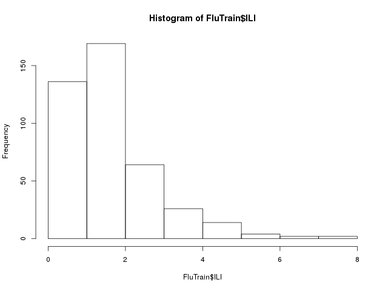
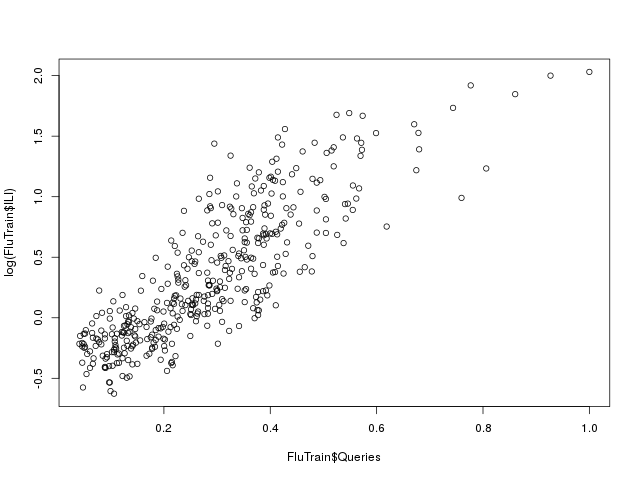
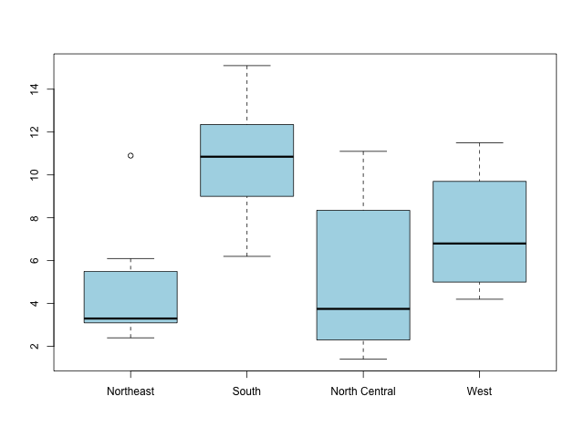

Homework Week 2
Homework week 2.
1 Climate Change [7/7]
There have been many studies documenting that the average global temperature has been increasing over the last century. The consequences of a continued rise in global temperature will be dire. Rising sea levels and an increased frequency of extreme weather events will affect billions of people.
In this problem, we will attempt to study the relationship between average global temperature and several other factors.
The file climate_change.csv contains climate data from May 1983 to December 2008. The available variables include:
- Year: the observation year.
- Month: the observation month.
- Temp: the difference in degrees Celsius between the average global temperature in that period and a reference value. This data comes from the Climatic Research Unit at the University of East Anglia.
- CO2, N2O, CH4, CFC.11, CFC.12: atmospheric concentrations of carbon
dioxide (CO2), nitrous oxide (N2O), methane (CH4),
trichlorofluoromethane (CCl3F; commonly referred to as CFC-11) and
dichlorodifluoromethane (CCl2F2; commonly referred to as CFC-12),
respectively. This data comes from the ESRL/NOAA Global Monitoring
Division.
- CO2, N2O and CH4 are expressed in ppmv (parts per million by volume – i.e., 397 ppmv of CO2 means that CO2 constitutes 397 millionths of the total volume of the atmosphere)
- CFC.11 and CFC.12 are expressed in ppbv (parts per billion by volume).
- Aerosols: the mean stratospheric aerosol optical depth at 550 nm. This variable is linked to volcanoes, as volcanic eruptions result in new particles being added to the atmosphere, which affect how much of the sun's energy is reflected back into space. This data is from the Godard Institute for Space Studies at NASA.
- TSI: the total solar irradiance (TSI) in \(\frac{W}{m^2}\) (the rate at which the sun's energy is deposited per unit area). Due to sunspots and other solar phenomena, the amount of energy that is given off by the sun varies substantially with time. This data is from the SOLARIS-HEPPA project website.
- MEI: multivariate El Nino Southern Oscillation index (MEI), a measure of the strength of the El Nino/La Nina-Southern Oscillation (a weather effect in the Pacific Ocean that affects global temperatures). This data comes from the ESRL/NOAA Physical Sciences Division.
1.1 DONE Problem 1.1 - Creating Our First Model (2 points possible)
We are interested in how changes in these variables affect future temperatures, as well as how well these variables explain temperature changes so far. To do this, first read the dataset climate_change.csv into R.
Then, split the data into a training set, consisting of all the observations up to and including 2006, and a testing set consisting of the remaining years (hint: use subset). A training set refers to the data that will be used to build the model (this is the data we give to the lm() function), and a testing set refers to the data we will use to test our predictive ability.
1.1.1 Download the data set
In this part we can download the data
library(parallel) if(!file.exists("../data")) { dir.create("../data") } fileUrl <- c("https://courses.edx.org/asset-v1:MITx+15.071x_2a+2T2015+type@asset+block/climate_change.csv") fileName <- c("climate_change.csv") dataPath <- "../data" filePath <- paste(dataPath, fileName, sep = "/") if(!file.exists(filePath)) { download.file(fileUrl, destfile = filePath, method = "curl") } list.files("../data")
[1] "AnonymityPoll.csv" "baseball.csv" "BoeingStock.csv" [4] "climate_change.csv" "CocaColaStock.csv" "CountryCodes.csv" [7] "CPSData.csv" "FluTest.csv" "FluTrain.csv" [10] "GEStock.csv" "IBMStock.csv" "MetroAreaCodes.csv" [13] "mvtWeek1.csv" "NBA_test.csv" "NBA_train.csv" [16] "pisa2009test.csv" "pisa2009train.csv" "ProcterGambleStock.csv" [19] "README.md" "USDA.csv" "WHO.csv" [22] "WHO_Europe.csv" "wine.csv" "wine_test.csv"
1.1.2 Loading the data
writeLines("\n :: Read in data") climateChange <- read.table("../data/climate_change.csv", sep = ",", header = TRUE) str(climateChange) summary(climateChange)
:: Read in data
'data.frame': 308 obs. of 11 variables:
$ Year : int 1983 1983 1983 1983 1983 1983 1983 1983 1984 1984 ...
$ Month : int 5 6 7 8 9 10 11 12 1 2 ...
$ MEI : num 2.556 2.167 1.741 1.13 0.428 ...
$ CO2 : num 346 346 344 342 340 ...
$ CH4 : num 1639 1634 1633 1631 1648 ...
$ N2O : num 304 304 304 304 304 ...
$ CFC.11 : num 191 192 193 194 194 ...
$ CFC.12 : num 350 352 354 356 357 ...
$ TSI : num 1366 1366 1366 1366 1366 ...
$ Aerosols: num 0.0863 0.0794 0.0731 0.0673 0.0619 0.0569 0.0524 0.0486 0.0451 0.0416 ...
$ Temp : num 0.109 0.118 0.137 0.176 0.149 0.093 0.232 0.078 0.089 0.013 ...
Year Month MEI CO2
Min. :1983 Min. : 1.000 Min. :-1.6350 Min. :340.2
1st Qu.:1989 1st Qu.: 4.000 1st Qu.:-0.3987 1st Qu.:353.0
Median :1996 Median : 7.000 Median : 0.2375 Median :361.7
Mean :1996 Mean : 6.552 Mean : 0.2756 Mean :363.2
3rd Qu.:2002 3rd Qu.:10.000 3rd Qu.: 0.8305 3rd Qu.:373.5
Max. :2008 Max. :12.000 Max. : 3.0010 Max. :388.5
CH4 N2O CFC.11 CFC.12 TSI
Min. :1630 Min. :303.7 Min. :191.3 Min. :350.1 Min. :1365
1st Qu.:1722 1st Qu.:308.1 1st Qu.:246.3 1st Qu.:472.4 1st Qu.:1366
Median :1764 Median :311.5 Median :258.3 Median :528.4 Median :1366
Mean :1750 Mean :312.4 Mean :252.0 Mean :497.5 Mean :1366
3rd Qu.:1787 3rd Qu.:317.0 3rd Qu.:267.0 3rd Qu.:540.5 3rd Qu.:1366
Max. :1814 Max. :322.2 Max. :271.5 Max. :543.8 Max. :1367
Aerosols Temp
Min. :0.00160 Min. :-0.2820
1st Qu.:0.00280 1st Qu.: 0.1217
Median :0.00575 Median : 0.2480
Mean :0.01666 Mean : 0.2568
3rd Qu.:0.01260 3rd Qu.: 0.4073
Max. :0.14940 Max. : 0.7390
Splitting the data in two data sets for training and test data frames.
First data frame for training purposes:
training <- subset(climateChange, Year <= 2006) writeLines("\n :: Exploratory data analysis for the training dataframe") str(training) summary(training)
:: Exploratory data analysis for the training dataframe
'data.frame': 284 obs. of 11 variables:
$ Year : int 1983 1983 1983 1983 1983 1983 1983 1983 1984 1984 ...
$ Month : int 5 6 7 8 9 10 11 12 1 2 ...
$ MEI : num 2.556 2.167 1.741 1.13 0.428 ...
$ CO2 : num 346 346 344 342 340 ...
$ CH4 : num 1639 1634 1633 1631 1648 ...
$ N2O : num 304 304 304 304 304 ...
$ CFC.11 : num 191 192 193 194 194 ...
$ CFC.12 : num 350 352 354 356 357 ...
$ TSI : num 1366 1366 1366 1366 1366 ...
$ Aerosols: num 0.0863 0.0794 0.0731 0.0673 0.0619 0.0569 0.0524 0.0486 0.0451 0.0416 ...
$ Temp : num 0.109 0.118 0.137 0.176 0.149 0.093 0.232 0.078 0.089 0.013 ...
Year Month MEI CO2
Min. :1983 Min. : 1.000 Min. :-1.5860 Min. :340.2
1st Qu.:1989 1st Qu.: 4.000 1st Qu.:-0.3230 1st Qu.:352.3
Median :1995 Median : 7.000 Median : 0.3085 Median :359.9
Mean :1995 Mean : 6.556 Mean : 0.3419 Mean :361.4
3rd Qu.:2001 3rd Qu.:10.000 3rd Qu.: 0.8980 3rd Qu.:370.6
Max. :2006 Max. :12.000 Max. : 3.0010 Max. :385.0
CH4 N2O CFC.11 CFC.12 TSI
Min. :1630 Min. :303.7 Min. :191.3 Min. :350.1 Min. :1365
1st Qu.:1716 1st Qu.:307.7 1st Qu.:249.6 1st Qu.:462.5 1st Qu.:1366
Median :1759 Median :310.8 Median :260.4 Median :522.1 Median :1366
Mean :1746 Mean :311.7 Mean :252.5 Mean :494.2 Mean :1366
3rd Qu.:1782 3rd Qu.:316.1 3rd Qu.:267.4 3rd Qu.:541.0 3rd Qu.:1366
Max. :1808 Max. :320.5 Max. :271.5 Max. :543.8 Max. :1367
Aerosols Temp
Min. :0.00160 Min. :-0.2820
1st Qu.:0.00270 1st Qu.: 0.1180
Median :0.00620 Median : 0.2325
Mean :0.01772 Mean : 0.2478
3rd Qu.:0.01400 3rd Qu.: 0.4065
Max. :0.14940 Max. : 0.7390
First data frame for test purposes:
test <- subset(climateChange, Year > 2006)
str(test)
summary(test)
'data.frame': 24 obs. of 11 variables:
$ Year : int 2007 2007 2007 2007 2007 2007 2007 2007 2007 2007 ...
$ Month : int 1 2 3 4 5 6 7 8 9 10 ...
$ MEI : num 0.974 0.51 0.074 -0.049 0.183 ...
$ CO2 : num 383 384 385 386 387 ...
$ CH4 : num 1800 1803 1803 1802 1796 ...
$ N2O : num 321 321 321 321 320 ...
$ CFC.11 : num 248 248 248 248 247 ...
$ CFC.12 : num 539 539 539 539 538 ...
$ TSI : num 1366 1366 1366 1366 1366 ...
$ Aerosols: num 0.0054 0.0051 0.0045 0.0045 0.0041 0.004 0.004 0.0041 0.0042 0.0041 ...
$ Temp : num 0.601 0.498 0.435 0.466 0.372 0.382 0.394 0.358 0.402 0.362 ...
Year Month MEI CO2
Min. :2007 Min. : 1.00 Min. :-1.6350 Min. :380.9
1st Qu.:2007 1st Qu.: 3.75 1st Qu.:-1.0437 1st Qu.:383.1
Median :2008 Median : 6.50 Median :-0.5305 Median :384.5
Mean :2008 Mean : 6.50 Mean :-0.5098 Mean :384.7
3rd Qu.:2008 3rd Qu.: 9.25 3rd Qu.:-0.0360 3rd Qu.:386.1
Max. :2008 Max. :12.00 Max. : 0.9740 Max. :388.5
CH4 N2O CFC.11 CFC.12 TSI
Min. :1772 Min. :320.3 Min. :244.1 Min. :534.9 Min. :1366
1st Qu.:1792 1st Qu.:320.6 1st Qu.:244.6 1st Qu.:535.1 1st Qu.:1366
Median :1798 Median :321.3 Median :246.2 Median :537.0 Median :1366
Mean :1797 Mean :321.1 Mean :245.9 Mean :536.7 Mean :1366
3rd Qu.:1804 3rd Qu.:321.4 3rd Qu.:246.6 3rd Qu.:537.4 3rd Qu.:1366
Max. :1814 Max. :322.2 Max. :248.4 Max. :539.2 Max. :1366
Aerosols Temp
Min. :0.003100 Min. :0.074
1st Qu.:0.003600 1st Qu.:0.307
Median :0.004100 Median :0.380
Mean :0.004071 Mean :0.363
3rd Qu.:0.004500 3rd Qu.:0.414
Max. :0.005400 Max. :0.601
1.1.3 Question a
Next, build a linear regression model to predict the dependent variable Temp, using MEI, CO2, CH4, N2O, CFC.11, CFC.12, TSI, and Aerosols as independent variables (Year and Month should NOT be used in the model). Use the training set to build the model.
writeLines("\n :: Linear regression model for Climate Change") tempReg <- lm(Temp ~ MEI + CO2 + CH4 + N2O + CFC.11 + CFC.12 + TSI + Aerosols, data = training) summary(tempReg)
:: Linear regression model for Climate Change
Call:
lm(formula = Temp ~ MEI + CO2 + CH4 + N2O + CFC.11 + CFC.12 +
TSI + Aerosols, data = training)
Residuals:
Min 1Q Median 3Q Max
-0.25888 -0.05913 -0.00082 0.05649 0.32433
Coefficients:
Estimate Std. Error t value Pr(>|t|)
(Intercept) -1.246e+02 1.989e+01 -6.265 1.43e-09 ***
MEI 6.421e-02 6.470e-03 9.923 < 2e-16 ***
CO2 6.457e-03 2.285e-03 2.826 0.00505 **
CH4 1.240e-04 5.158e-04 0.240 0.81015
N2O -1.653e-02 8.565e-03 -1.930 0.05467 .
CFC.11 -6.631e-03 1.626e-03 -4.078 5.96e-05 ***
CFC.12 3.808e-03 1.014e-03 3.757 0.00021 ***
TSI 9.314e-02 1.475e-02 6.313 1.10e-09 ***
Aerosols -1.538e+00 2.133e-01 -7.210 5.41e-12 ***
---
Signif. codes: 0 ‘***’ 0.001 ‘**’ 0.01 ‘*’ 0.05 ‘.’ 0.1 ‘ ’ 1
Residual standard error: 0.09171 on 275 degrees of freedom
Multiple R-squared: 0.7509, Adjusted R-squared: 0.7436
F-statistic: 103.6 on 8 and 275 DF, p-value: < 2.2e-16
Enter the model R2 (the "Multiple R-squared" value):
1.1.3.1 Answer
0.7509
Explanation
First, read in the data and split it using the subset command:
climate = read.csv("climate_change.csv")
train = subset(climate, Year <= 2006)
test = subset(climate, Year > 2006)
Then, you can create the model using the command:
climatelm = lm(Temp ~ MEI + CO2 + CH4 + N2O + CFC.11 + CFC.12 + TSI + Aerosols, data=train)
Lastly, look at the model using summary(climatelm). The Multiple R-squared value is 0.7509.
1.2 DONE Problem 1.2 - Creating Our First Model (1 point possible)
Which variables are significant in the model? We will consider a variable signficant only if the p-value is below 0.05. (Select all that apply.)
1.2.1 Answer
If you look at the model we created in the previous problem using summary(climatelm), all of the variables have at least one star except for CH4 and N2O. So MEI, CO2, CFC.11, CFC.12, TSI, and Aerosols are all significant.
1.3 DONE Problem 2.1 - Understanding the Model (1 point possible)
Current scientific opinion is that nitrous oxide and CFC-11 are greenhouse gases: gases that are able to trap heat from the sun and contribute to the heating of the Earth. However, the regression coefficients of both the N2O and CFC-11 variables are negative, indicating that increasing atmospheric concentrations of either of these two compounds is associated with lower global temperatures.
Which of the following is the simplest correct explanation for this contradiction?
cor(training, use="complete.obs")
Year Month MEI CO2 CH4
Year 1.00000000 -0.0279419602 -0.0369876842 0.98274939 0.91565945
Month -0.02794196 1.0000000000 0.0008846905 -0.10673246 0.01856866
MEI -0.03698768 0.0008846905 1.0000000000 -0.04114717 -0.03341930
CO2 0.98274939 -0.1067324607 -0.0411471651 1.00000000 0.87727963
CH4 0.91565945 0.0185686624 -0.0334193014 0.87727963 1.00000000
N2O 0.99384523 0.0136315303 -0.0508197755 0.97671982 0.89983864
CFC.11 0.56910643 -0.0131112236 0.0690004387 0.51405975 0.77990402
CFC.12 0.89701166 0.0006751102 0.0082855443 0.85268963 0.96361625
TSI 0.17030201 -0.0346061935 -0.1544919227 0.17742893 0.24552844
Aerosols -0.34524670 0.0148895406 0.3402377871 -0.35615480 -0.26780919
Temp 0.78679714 -0.0998567411 0.1724707512 0.78852921 0.70325502
N2O CFC.11 CFC.12 TSI Aerosols
Year 0.99384523 0.56910643 0.8970116635 0.17030201 -0.34524670
Month 0.01363153 -0.01311122 0.0006751102 -0.03460619 0.01488954
MEI -0.05081978 0.06900044 0.0082855443 -0.15449192 0.34023779
CO2 0.97671982 0.51405975 0.8526896272 0.17742893 -0.35615480
CH4 0.89983864 0.77990402 0.9636162478 0.24552844 -0.26780919
N2O 1.00000000 0.52247732 0.8679307757 0.19975668 -0.33705457
CFC.11 0.52247732 1.00000000 0.8689851828 0.27204596 -0.04392120
CFC.12 0.86793078 0.86898518 1.0000000000 0.25530281 -0.22513124
TSI 0.19975668 0.27204596 0.2553028138 1.00000000 0.05211651
Aerosols -0.33705457 -0.04392120 -0.2251312440 0.05211651 1.00000000
Temp 0.77863893 0.40771029 0.6875575483 0.24338269 -0.38491375
Temp
Year 0.78679714
Month -0.09985674
MEI 0.17247075
CO2 0.78852921
CH4 0.70325502
N2O 0.77863893
CFC.11 0.40771029
CFC.12 0.68755755
TSI 0.24338269
Aerosols -0.38491375
Temp 1.00000000

Figure 1: Correlation plot of the climate change variables
The correlation plot shows a strong correlation between \(N_2 O\) and and \(CO_2\) in one hand, in other hand \(CFC.11\) is highly correlated with \(CFC.12\) and \(CH_4\).
1.3.1 Answer
The linear correlation of N2O and CFC.11 with other variables in the data set is quite large. The first explanation does not seem correct, as the warming effect of nitrous oxide and CFC-11 are well documented, and our regression analysis is not enough to disprove it. The second explanation is unlikely, as we have estimated eight coefficients and the intercept from 284 observations.
1.4 DONE Problem 2.2 - Understanding the Model (2 points possible)
Compute the correlations between all the variables in the training set.
1.4.1 Question a
Which of the following independent variables is \(N_2O\) highly correlated with (absolute correlation greater than 0.7)? Select all that apply.
1.4.1.1 Answer
CO2 CH4 CFC.12
1.4.2 Question b
Which of the following independent variables is \(CFC.11\) highly correlated with? Select all that apply.
CH4 CFC.12
Explanation
You can calculate all correlations at once using cor(train) where train is the name of the training data set.
1.5 DONE Problem 3 - Simplifying the Model (2 points possible)
Given that the correlations are so high, let us focus on the \(N_2O\) variable and build a model with only MEI, TSI, Aerosols and \(N_2O\) as independent variables. Remember to use the training set to build the model.
writeLines("\n :: Linear regression model for Climate Change") tempReg2 <- lm(Temp ~ MEI + TSI + Aerosols + N2O, data = training) summary(tempReg2)
null device
1
:: Linear regression model for Climate Change
Call:
lm(formula = Temp ~ MEI + TSI + Aerosols + N2O, data = training)
Residuals:
Min 1Q Median 3Q Max
-0.27916 -0.05975 -0.00595 0.05672 0.34195
Coefficients:
Estimate Std. Error t value Pr(>|t|)
(Intercept) -1.162e+02 2.022e+01 -5.747 2.37e-08 ***
MEI 6.419e-02 6.652e-03 9.649 < 2e-16 ***
TSI 7.949e-02 1.487e-02 5.344 1.89e-07 ***
Aerosols -1.702e+00 2.180e-01 -7.806 1.19e-13 ***
N2O 2.532e-02 1.311e-03 19.307 < 2e-16 ***
---
Signif. codes: 0 ‘***’ 0.001 ‘**’ 0.01 ‘*’ 0.05 ‘.’ 0.1 ‘ ’ 1
Residual standard error: 0.09547 on 279 degrees of freedom
Multiple R-squared: 0.7261, Adjusted R-squared: 0.7222
F-statistic: 184.9 on 4 and 279 DF, p-value: < 2.2e-16
1.5.1 Question a
Enter the coefficient of \(N_2O\) in this reduced model:
1.5.1.1 Answer
2.532e-02
1.5.2 Question b
(How does this compare to the coefficient in the previous model with all of the variables?)
Enter the model \(R^2\):
1.5.2.1 Answer
0.7261
Explanation
We can create this simplified model with the command:
LinReg = lm(Temp ~ MEI + N2O + TSI + Aerosols, data=train)
You can get the coefficient for N2O and the model R-squared by typing summary(LinReg).
We have observed that, for this problem, when we remove many variables the sign of N2O flips. The model has not lost a lot of explanatory power (the model R2 is 0.7261 compared to 0.7509 previously) despite removing many variables. As discussed in lecture, this type of behavior is typical when building a model where many of the independent variables are highly correlated with each other. In this particular problem many of the variables (CO2, CH4, N2O, CFC.11 and CFC.12) are highly correlated, since they are all driven by human industrial development.
1.6 DONE Problem 4 - Automatically Building the Model (4 points possible)
We have many variables in this problem, and as we have seen above, dropping some from the model does not decrease model quality. R provides a function, step, that will automate the procedure of trying different combinations of variables to find a good compromise of model simplicity and \(R^2\). This trade-off is formalized by the Akaike information criterion (AIC) - it can be informally thought of as the quality of the model with a penalty for the number of variables in the model.
The step function has one argument - the name of the initial model. It returns a simplified model. Use the step function in R to derive a new model, with the full model as the initial model (HINT: If your initial full model was called "climateLM", you could create a new model with the step function by typing step(climateLM). Be sure to save your new model to a variable name so that you can look at the summary. For more information about the step function, type ?step in your R console.)
writeLines("\n :: Optimizing the linear regression model for Climate Change") tempReg3 <- step(tempReg) summary(tempReg3)
:: Optimizing the linear regression model for Climate Change
Start: AIC=-1348.16
Temp ~ MEI + CO2 + CH4 + N2O + CFC.11 + CFC.12 + TSI + Aerosols
Df Sum of Sq RSS AIC
- CH4 1 0.00049 2.3135 -1350.1
<none> 2.3130 -1348.2
- N2O 1 0.03132 2.3443 -1346.3
- CO2 1 0.06719 2.3802 -1342.0
- CFC.12 1 0.11874 2.4318 -1335.9
- CFC.11 1 0.13986 2.4529 -1333.5
- TSI 1 0.33516 2.6482 -1311.7
- Aerosols 1 0.43727 2.7503 -1301.0
- MEI 1 0.82823 3.1412 -1263.2
Step: AIC=-1350.1
Temp ~ MEI + CO2 + N2O + CFC.11 + CFC.12 + TSI + Aerosols
Df Sum of Sq RSS AIC
<none> 2.3135 -1350.1
- N2O 1 0.03133 2.3448 -1348.3
- CO2 1 0.06672 2.3802 -1344.0
- CFC.12 1 0.13023 2.4437 -1336.5
- CFC.11 1 0.13938 2.4529 -1335.5
- TSI 1 0.33500 2.6485 -1313.7
- Aerosols 1 0.43987 2.7534 -1302.7
- MEI 1 0.83118 3.1447 -1264.9
Call:
lm(formula = Temp ~ MEI + CO2 + N2O + CFC.11 + CFC.12 + TSI +
Aerosols, data = training)
Residuals:
Min 1Q Median 3Q Max
-0.25770 -0.05994 -0.00104 0.05588 0.32203
Coefficients:
Estimate Std. Error t value Pr(>|t|)
(Intercept) -1.245e+02 1.985e+01 -6.273 1.37e-09 ***
MEI 6.407e-02 6.434e-03 9.958 < 2e-16 ***
CO2 6.402e-03 2.269e-03 2.821 0.005129 **
N2O -1.602e-02 8.287e-03 -1.933 0.054234 .
CFC.11 -6.609e-03 1.621e-03 -4.078 5.95e-05 ***
CFC.12 3.868e-03 9.812e-04 3.942 0.000103 ***
TSI 9.312e-02 1.473e-02 6.322 1.04e-09 ***
Aerosols -1.540e+00 2.126e-01 -7.244 4.36e-12 ***
---
Signif. codes: 0 ‘***’ 0.001 ‘**’ 0.01 ‘*’ 0.05 ‘.’ 0.1 ‘ ’ 1
Residual standard error: 0.09155 on 276 degrees of freedom
Multiple R-squared: 0.7508, Adjusted R-squared: 0.7445
F-statistic: 118.8 on 7 and 276 DF, p-value: < 2.2e-16
1.6.1 Question a
Enter the R2 value of the model produced by the step function:
1.6.1.1 Answer
Only \(CH_4\) was removed.
It is interesting to note that the step function does not address the collinearity of the variables, except that adding highly correlated variables will not improve the R2 significantly. The consequence of this is that the step function will not necessarily produce a very interpretable model - just a model that has balanced quality and simplicity for a particular weighting of quality and simplicity (AIC).
1.7 DONE Problem 5 - Testing on Unseen Data (2 points possible)
We have developed an understanding of how well we can fit a linear regression to the training data, but does the model quality hold when applied to unseen data?
Using the model produced from the step function, calculate temperature predictions for the testing data set, using the predict function.
writeLines("\n :: Make test set predictions") predictTest <- predict(tempReg3, newdata = test) predictTest
:: Make test set predictions
285 286 287 288 289 290 291 292
0.4677808 0.4435404 0.4265541 0.4299162 0.4455113 0.4151422 0.4097367 0.3839390
293 294 295 296 297 298 299 300
0.3255595 0.3274147 0.3231401 0.3316704 0.3522134 0.3313129 0.3142112 0.3703410
301 302 303 304 305 306 307 308
0.4162213 0.4391458 0.4237965 0.3913679 0.3587615 0.3451991 0.3607087 0.3638076
But to get a measure of the predictions goodness of fit, we need to calculate the out of sample R-squared.
writeLines("\n :: Compute out-of-sample R^2") SSE <- sum((predictTest - test$Temp)^2) SST <- sum((mean(training$Temp) - test$Temp)^2) R2 <- 1 - (SSE/SST) R2
:: Compute out-of-sample R^2 [1] 0.6286051
Enter the testing set R2:
1.7.1 Answer
0.6286051
Explanation
The R code to calculate the R-squared can be written as follows (your variable names may be different):
tempPredict = predict(climateStep, newdata = test)
SSE = sum((tempPredict - test$Temp)^2)
SST = sum( (mean(train$Temp) - test$Temp)^2)
R2 = 1 - SSE/SST
2 Reading Test Scores [16/16]
The Programme for International Student Assessment (PISA) is a test given every three years to 15-year-old students from around the world to evaluate their performance in mathematics, reading, and science. This test provides a quantitative way to compare the performance of students from different parts of the world. In this homework assignment, we will predict the reading scores of students from the United States of America on the 2009 PISA exam.
The datasets pisa2009train.csv and pisa2009test.csv contain information about the demographics and schools for American students taking the exam, derived from 2009 PISA Public-Use Data Files distributed by the United States National Center for Education Statistics (NCES). While the datasets are not supposed to contain identifying information about students taking the test, by using the data you are bound by the NCES data use agreement, which prohibits any attempt to determine the identity of any student in the datasets.
Each row in the datasets pisa2009train.csv and pisa2009test.csv represents one student taking the exam. The datasets have the following variables:
- grade: The grade in school of the student (most 15-year-olds in America are in 10th grade)
- male: Whether the student is male (1/0)
- raceeth: The race/ethnicity composite of the student
- preschool: Whether the student attended preschool (1/0)
- expectBachelors: Whether the student expects to obtain a bachelor's degree (1/0)
- motherHS: Whether the student's mother completed high school (1/0)
- motherBachelors: Whether the student's mother obtained a bachelor's degree (1/0)
- motherWork: Whether the student's mother has part-time or full-time work (1/0)
- fatherHS: Whether the student's father completed high school (1/0)
- fatherBachelors: Whether the student's father obtained a bachelor's degree (1/0)
- fatherWork: Whether the student's father has part-time or full-time work (1/0)
- selfBornUS: Whether the student was born in the United States of America (1/0)
- motherBornUS: Whether the student's mother was born in the United States of America (1/0)
- fatherBornUS: Whether the student's father was born in the United States of America (1/0)
- englishAtHome: Whether the student speaks English at home (1/0)
- computerForSchoolwork: Whether the student has access to a computer for schoolwork (1/0)
- read30MinsADay: Whether the student reads for pleasure for 30 minutes/day (1/0)
- minutesPerWeekEnglish: The number of minutes per week the student spend in English class
- studentsInEnglish: The number of students in this student's English class at school
- schoolHasLibrary: Whether this student's school has a library (1/0)
- publicSchool: Whether this student attends a public school (1/0)
- urban: Whether this student's school is in an urban area (1/0)
- schoolSize: The number of students in this student's school
- readingScore: The student's reading score, on a 1000-point scale
2.1 DONE Problem 1.1 - Dataset size (1 point possible)
Load the training and testing sets using the read.csv() function, and save them as variables with the names pisaTrain and pisaTest.
2.1.1 Download the data sets
In this part we can download the data
library(parallel) if(!file.exists("../data")) { dir.create("../data") } fileUrl <- c("https://courses.edx.org/asset-v1:MITx+15.071x_2a+2T2015+type@asset+block/pisa2009train.csv", "https://courses.edx.org/asset-v1:MITx+15.071x_2a+2T2015+type@asset+block/pisa2009test.csv") fileName <- c("pisa2009train.csv", "pisa2009test.csv") dataPath <- "../data" for(i in 1:2) { filePath <- paste(dataPath, fileName[i], sep = "/") if(!file.exists(filePath)) { download.file(fileUrl[i], destfile = filePath, method = "curl") } } list.files("../data")
[1] "AnonymityPoll.csv" "baseball.csv" "BoeingStock.csv" [4] "climate_change.csv" "CocaColaStock.csv" "CountryCodes.csv" [7] "CPSData.csv" "FluTest.csv" "FluTrain.csv" [10] "GEStock.csv" "IBMStock.csv" "MetroAreaCodes.csv" [13] "mvtWeek1.csv" "NBA_test.csv" "NBA_train.csv" [16] "pisa2009test.csv" "pisa2009train.csv" "ProcterGambleStock.csv" [19] "README.md" "USDA.csv" "WHO.csv" [22] "WHO_Europe.csv" "wine.csv" "wine_test.csv"
2.1.2 Loading the data
writeLines("\n :: Read the training data set") pisaTrain <- read.table("../data/pisa2009train.csv", sep = ",", header = TRUE) str(pisaTrain) summary(pisaTrain) writeLines("\n\n :: Read the test data set: DO NOT SEE THE DATA!") pisaTest <- read.table("../data/pisa2009test.csv", sep = ",", header = TRUE)
:: Read the training data set
'data.frame': 3663 obs. of 24 variables:
$ grade : int 11 11 9 10 10 10 10 10 9 10 ...
$ male : int 1 1 1 0 1 1 0 0 0 1 ...
$ raceeth : Factor w/ 7 levels "American Indian/Alaska Native",..: NA 7 7 3 4 3 2 7 7 5 ...
$ preschool : int NA 0 1 1 1 1 0 1 1 1 ...
$ expectBachelors : int 0 0 1 1 0 1 1 1 0 1 ...
$ motherHS : int NA 1 1 0 1 NA 1 1 1 1 ...
$ motherBachelors : int NA 1 1 0 0 NA 0 0 NA 1 ...
$ motherWork : int 1 1 1 1 1 1 1 0 1 1 ...
$ fatherHS : int NA 1 1 1 1 1 NA 1 0 0 ...
$ fatherBachelors : int NA 0 NA 0 0 0 NA 0 NA 0 ...
$ fatherWork : int 1 1 1 1 0 1 NA 1 1 1 ...
$ selfBornUS : int 1 1 1 1 1 1 0 1 1 1 ...
$ motherBornUS : int 0 1 1 1 1 1 1 1 1 1 ...
$ fatherBornUS : int 0 1 1 1 0 1 NA 1 1 1 ...
$ englishAtHome : int 0 1 1 1 1 1 1 1 1 1 ...
$ computerForSchoolwork: int 1 1 1 1 1 1 1 1 1 1 ...
$ read30MinsADay : int 0 1 0 1 1 0 0 1 0 0 ...
$ minutesPerWeekEnglish: int 225 450 250 200 250 300 250 300 378 294 ...
$ studentsInEnglish : int NA 25 28 23 35 20 28 30 20 24 ...
$ schoolHasLibrary : int 1 1 1 1 1 1 1 1 0 1 ...
$ publicSchool : int 1 1 1 1 1 1 1 1 1 1 ...
$ urban : int 1 0 0 1 1 0 1 0 1 0 ...
$ schoolSize : int 673 1173 1233 2640 1095 227 2080 1913 502 899 ...
$ readingScore : num 476 575 555 458 614 ...
grade male raceeth preschool
Min. : 8.00 Min. :0.0000 White :2015 Min. :0.0000
1st Qu.:10.00 1st Qu.:0.0000 Hispanic : 834 1st Qu.:0.0000
Median :10.00 Median :1.0000 Black : 444 Median :1.0000
Mean :10.09 Mean :0.5111 Asian : 143 Mean :0.7228
3rd Qu.:10.00 3rd Qu.:1.0000 More than one race: 124 3rd Qu.:1.0000
Max. :12.00 Max. :1.0000 (Other) : 68 Max. :1.0000
NA's : 35 NA's :56
expectBachelors motherHS motherBachelors motherWork
Min. :0.0000 Min. :0.00 Min. :0.0000 Min. :0.0000
1st Qu.:1.0000 1st Qu.:1.00 1st Qu.:0.0000 1st Qu.:0.0000
Median :1.0000 Median :1.00 Median :0.0000 Median :1.0000
Mean :0.7859 Mean :0.88 Mean :0.3481 Mean :0.7345
3rd Qu.:1.0000 3rd Qu.:1.00 3rd Qu.:1.0000 3rd Qu.:1.0000
Max. :1.0000 Max. :1.00 Max. :1.0000 Max. :1.0000
NA's :62 NA's :97 NA's :397 NA's :93
fatherHS fatherBachelors fatherWork selfBornUS
Min. :0.0000 Min. :0.0000 Min. :0.0000 Min. :0.0000
1st Qu.:1.0000 1st Qu.:0.0000 1st Qu.:1.0000 1st Qu.:1.0000
Median :1.0000 Median :0.0000 Median :1.0000 Median :1.0000
Mean :0.8593 Mean :0.3319 Mean :0.8531 Mean :0.9313
3rd Qu.:1.0000 3rd Qu.:1.0000 3rd Qu.:1.0000 3rd Qu.:1.0000
Max. :1.0000 Max. :1.0000 Max. :1.0000 Max. :1.0000
NA's :245 NA's :569 NA's :233 NA's :69
motherBornUS fatherBornUS englishAtHome computerForSchoolwork
Min. :0.0000 Min. :0.0000 Min. :0.0000 Min. :0.0000
1st Qu.:1.0000 1st Qu.:1.0000 1st Qu.:1.0000 1st Qu.:1.0000
Median :1.0000 Median :1.0000 Median :1.0000 Median :1.0000
Mean :0.7725 Mean :0.7668 Mean :0.8717 Mean :0.8994
3rd Qu.:1.0000 3rd Qu.:1.0000 3rd Qu.:1.0000 3rd Qu.:1.0000
Max. :1.0000 Max. :1.0000 Max. :1.0000 Max. :1.0000
NA's :71 NA's :113 NA's :71 NA's :65
read30MinsADay minutesPerWeekEnglish studentsInEnglish schoolHasLibrary
Min. :0.0000 Min. : 0.0 Min. : 1.0 Min. :0.0000
1st Qu.:0.0000 1st Qu.: 225.0 1st Qu.:20.0 1st Qu.:1.0000
Median :0.0000 Median : 250.0 Median :25.0 Median :1.0000
Mean :0.2899 Mean : 266.2 Mean :24.5 Mean :0.9676
3rd Qu.:1.0000 3rd Qu.: 300.0 3rd Qu.:30.0 3rd Qu.:1.0000
Max. :1.0000 Max. :2400.0 Max. :75.0 Max. :1.0000
NA's :34 NA's :186 NA's :249 NA's :143
publicSchool urban schoolSize readingScore
Min. :0.0000 Min. :0.0000 Min. : 100 Min. :168.6
1st Qu.:1.0000 1st Qu.:0.0000 1st Qu.: 712 1st Qu.:431.7
Median :1.0000 Median :0.0000 Median :1212 Median :499.7
Mean :0.9339 Mean :0.3849 Mean :1369 Mean :497.9
3rd Qu.:1.0000 3rd Qu.:1.0000 3rd Qu.:1900 3rd Qu.:566.2
Max. :1.0000 Max. :1.0000 Max. :6694 Max. :746.0
NA's :162
:: Read the test data set: DO NOT SEE THE DATA!
2.1.3 Question a
How many students are there in the training set?
2.1.3.1 Answer
writeLines("\n :: Number of students in the training data set")
nrow(pisaTrain)
:: Number of students in the training data set [1] 3663
Explanation
The datasets can be loaded with:
pisaTrain = read.csv("pisa2009train.csv")
pisaTest = read.csv("pisa2009test.csv")
We can then access the number of rows in the training set with str(pisaTrain) or nrow(pisaTrain).
2.2 DONE Problem 1.2 - Summarizing the dataset (2 points possible)
Using tapply() on pisaTrain, what is the average reading test score of males?
tapply(pisaTrain$readingScore, pisaTrain$male, mean)
0 1
512.9406 483.5325
2.2.1 Answer
The correct invocation of tapply() here is:
tapply(pisaTrain$readingScore, pisaTrain$male, mean)
| Females | Males |
|---|---|
| \(512.9406\) | \(483.5325\) |
2.3 DONE Problem 1.3 - Locating missing values (1 point possible)
Which variables are missing data in at least one observation in the training set? Select all that apply.
writeLines("\n :: any NA in the features")
summary(pisaTrain)
:: any NA in the features
grade male raceeth preschool
Min. : 8.00 Min. :0.0000 White :2015 Min. :0.0000
1st Qu.:10.00 1st Qu.:0.0000 Hispanic : 834 1st Qu.:0.0000
Median :10.00 Median :1.0000 Black : 444 Median :1.0000
Mean :10.09 Mean :0.5111 Asian : 143 Mean :0.7228
3rd Qu.:10.00 3rd Qu.:1.0000 More than one race: 124 3rd Qu.:1.0000
Max. :12.00 Max. :1.0000 (Other) : 68 Max. :1.0000
NA's : 35 NA's :56
expectBachelors motherHS motherBachelors motherWork
Min. :0.0000 Min. :0.00 Min. :0.0000 Min. :0.0000
1st Qu.:1.0000 1st Qu.:1.00 1st Qu.:0.0000 1st Qu.:0.0000
Median :1.0000 Median :1.00 Median :0.0000 Median :1.0000
Mean :0.7859 Mean :0.88 Mean :0.3481 Mean :0.7345
3rd Qu.:1.0000 3rd Qu.:1.00 3rd Qu.:1.0000 3rd Qu.:1.0000
Max. :1.0000 Max. :1.00 Max. :1.0000 Max. :1.0000
NA's :62 NA's :97 NA's :397 NA's :93
fatherHS fatherBachelors fatherWork selfBornUS
Min. :0.0000 Min. :0.0000 Min. :0.0000 Min. :0.0000
1st Qu.:1.0000 1st Qu.:0.0000 1st Qu.:1.0000 1st Qu.:1.0000
Median :1.0000 Median :0.0000 Median :1.0000 Median :1.0000
Mean :0.8593 Mean :0.3319 Mean :0.8531 Mean :0.9313
3rd Qu.:1.0000 3rd Qu.:1.0000 3rd Qu.:1.0000 3rd Qu.:1.0000
Max. :1.0000 Max. :1.0000 Max. :1.0000 Max. :1.0000
NA's :245 NA's :569 NA's :233 NA's :69
motherBornUS fatherBornUS englishAtHome computerForSchoolwork
Min. :0.0000 Min. :0.0000 Min. :0.0000 Min. :0.0000
1st Qu.:1.0000 1st Qu.:1.0000 1st Qu.:1.0000 1st Qu.:1.0000
Median :1.0000 Median :1.0000 Median :1.0000 Median :1.0000
Mean :0.7725 Mean :0.7668 Mean :0.8717 Mean :0.8994
3rd Qu.:1.0000 3rd Qu.:1.0000 3rd Qu.:1.0000 3rd Qu.:1.0000
Max. :1.0000 Max. :1.0000 Max. :1.0000 Max. :1.0000
NA's :71 NA's :113 NA's :71 NA's :65
read30MinsADay minutesPerWeekEnglish studentsInEnglish schoolHasLibrary
Min. :0.0000 Min. : 0.0 Min. : 1.0 Min. :0.0000
1st Qu.:0.0000 1st Qu.: 225.0 1st Qu.:20.0 1st Qu.:1.0000
Median :0.0000 Median : 250.0 Median :25.0 Median :1.0000
Mean :0.2899 Mean : 266.2 Mean :24.5 Mean :0.9676
3rd Qu.:1.0000 3rd Qu.: 300.0 3rd Qu.:30.0 3rd Qu.:1.0000
Max. :1.0000 Max. :2400.0 Max. :75.0 Max. :1.0000
NA's :34 NA's :186 NA's :249 NA's :143
publicSchool urban schoolSize readingScore
Min. :0.0000 Min. :0.0000 Min. : 100 Min. :168.6
1st Qu.:1.0000 1st Qu.:0.0000 1st Qu.: 712 1st Qu.:431.7
Median :1.0000 Median :0.0000 Median :1212 Median :499.7
Mean :0.9339 Mean :0.3849 Mean :1369 Mean :497.9
3rd Qu.:1.0000 3rd Qu.:1.0000 3rd Qu.:1900 3rd Qu.:566.2
Max. :1.0000 Max. :1.0000 Max. :6694 Max. :746.0
NA's :162
2.3.1 Answer
We can read which variables have missing values from summary(pisaTrain). Because most variables are collected from study participants via survey, it is expected that most questions will have at least one missing value.
- raceeth
- preschool
- expectBachelors
- motherHS
- motherBachelors
- motherWork
- fatherHS
- fatherBachelors
- fatherWork
- selfBornUS
- motherBornUS
- fatherBornUS
- englishAtHome
- computerForSchoolwork
- read30MinsADay
- minutesPerWeekEnglish
- studentsInEnglish
- schoolHasLibrary
- schoolSize
2.4 DONE Problem 1.4 - Removing missing values (2 points possible)
Linear regression discards observations with missing data, so we will remove all such observations from the training and testing sets. Later in the course, we will learn about imputation, which deals with missing data by filling in missing values with plausible information.
Type the following commands into your R console to remove observations with any missing value from pisaTrain and pisaTest:
writeLines("\n :: Omiting the non complete observations") pisaTrain <- na.omit(pisaTrain) pisaTest <- na.omit(pisaTest)
:: Omiting the non complete observations
2.4.1 Question a
How many observations are now in the training set?
writeLines("\n :: Number of observations in the training set")
nrow(pisaTrain)
:: Number of observations in the training set [1] 2414
2.4.2 Question b
How many observations are now in the testing set?
writeLines("\n :: Number of observations in the testing set")
nrow(pisaTest)
:: Number of observations in the testing set [1] 990
2.4.3 Answer
After running the provided commands we can use str(pisaTrain) and str(pisaTest), or nrow(pisaTrain) and nrow(pisaTest), to check the new number of rows in the datasets.
2.5 DONE Problem 2.1 - Factor variables (2 points possible)
Factor variables are variables that take on a discrete set of values, like the "Region" variable in the WHO dataset from the second lecture of Unit 1. This is an unordered factor because there isn't any natural ordering between the levels. An ordered factor has a natural ordering between the levels (an example would be the classifications "large," "medium," and "small").
2.5.1 Question a
Which of the following variables is an unordered factor with at least 3 levels? (Select all that apply.)
class(pisaTrain$grade) class(pisaTrain$male) class(pisaTrain$raceeth) str(pisaTrain$raceeth)
[1] "integer" [1] "integer" [1] "factor" Factor w/ 7 levels "American Indian/Alaska Native",..: 7 3 4 7 5 4 7 4 7 7 ...
2.5.2 Question b
Which of the following variables is an ordered factor with at least 3 levels? (Select all that apply.)
class(pisaTrain$raceeth) str(pisaTrain$raceeth) summary(pisaTrain$raceeth)
[1] "factor"
Factor w/ 7 levels "American Indian/Alaska Native",..: 7 3 4 7 5 4 7 4 7 7 ...
American Indian/Alaska Native Asian
20 95
Black Hispanic
228 500
More than one race Native Hawaiian/Other Pacific Islander
81 20
White
1470
2.5.3 Answer
Male only has 2 levels (1 and 0). There is no natural ordering between the different values of raceeth, so it is an unordered factor. Meanwhile, we can order grades (8, 9, 10, 11, 12), so it is an ordered factor.
2.6 DONE Problem 2.2 - Unordered factors in regression models (1 point possible)
To include unordered factors in a linear regression model, we define one level as the "reference level" and add a binary variable for each of the remaining levels. In this way, a factor with n levels is replaced by n-1 binary variables. The reference level is typically selected to be the most frequently occurring level in the dataset.
As an example, consider the unordered factor variable "color", with levels "red", "green", and "blue". If "green" were the reference level, then we would add binary variables "colorred" and "colorblue" to a linear regression problem. All red examples would have colorred=1 and colorblue=0. All blue examples would have colorred=0 and colorblue=1. All green examples would have colorred=0 and colorblue=0.
Now, consider the variable "raceeth" in our problem, which has levels "American Indian/Alaska Native", "Asian", "Black", "Hispanic", "More than one race", "Native Hawaiian/Other Pacific Islander", and "White". Because it is the most common in our population, we will select White as the reference level.
2.6.1 Question a
Which binary variables will be included in the regression model? (Select all that apply.)
writeLines("\n :: Exploring the raceeth feature:") sort(table(pisaTrain$raceeth), decreasing = TRUE)
:: Exploring the raceeth feature:
White Hispanic
1470 500
Black Asian
228 95
More than one race American Indian/Alaska Native
81 20
Native Hawaiian/Other Pacific Islander
20
2.6.1.1 Answer
We create a binary variable for each level except the reference level, so we would create all these variables except for raceethWhite.
- raceethAmerican Indian/Alaska Native
- raceethAsian
- raceethBlack
- raceethHispanic
- raceethMore than one race
- raceethNative Hawaiian/Other Pacific Islander
2.7 DONE Problem 2.3 - Example unordered factors (2 points possible)
Consider again adding our unordered factor race to the regression model with reference level "White".
2.7.1 Question a
For a student who is Asian, which binary variables would be set to 0? All remaining variables will be set to 1. (Select all that apply.)
- raceethAmerican Indian/Alaska Native
- raceethBlack
- raceethHispanic
- raceethMore than one race
- raceethNative Hawaiian/Other Pacific Islander
2.7.2 Question b
For a student who is white, which binary variables would be set to 0? All remaining variables will be set to 1. (Select all that apply.)
- raceethAmerican Indian/Alaska Native
- raceethAsian
- raceethBlack
- raceethHispanic
- raceethMore than one race
- raceethNative Hawaiian/Other Pacific Islander
Explanation
An Asian student will have raceethAsian set to 1 and all other raceeth binary variables set to 0. Because "White" is the reference level, a white student will have all raceeth binary variables set to 0.
2.8 DONE Problem 3.1 - Building a model (2 points possible)
Because the race variable takes on text values, it was loaded as a factor variable when we read in the dataset with read.csv() – you can see this when you run str(pisaTrain) or str(pisaTest). However, by default R selects the first level alphabetically ("American Indian/Alaska Native") as the reference level of our factor instead of the most common level ("White"). Set the reference level of the factor by typing the following two lines in your R console:
writeLines("\n :: Setting the reference level of the factor to white") pisaTrain$raceeth <- relevel(pisaTrain$raceeth, "White") pisaTest$raceeth <- relevel(pisaTest$raceeth, "White")
:: Setting the reference level of the factor to white
Now, build a linear regression model (call it lmScore) using the training set to predict readingScore using all the remaining variables.
lmScore <- lm(readingScore ~ ., data = pisaTrain)
summary(lmScore)
Call:
lm(formula = readingScore ~ ., data = pisaTrain)
Residuals:
Min 1Q Median 3Q Max
-247.44 -48.86 1.86 49.77 217.18
Coefficients:
Estimate Std. Error t value
(Intercept) 143.766333 33.841226 4.248
grade 29.542707 2.937399 10.057
male -14.521653 3.155926 -4.601
raceethAmerican Indian/Alaska Native -67.277327 16.786935 -4.008
raceethAsian -4.110325 9.220071 -0.446
raceethBlack -67.012347 5.460883 -12.271
raceethHispanic -38.975486 5.177743 -7.528
raceethMore than one race -16.922522 8.496268 -1.992
raceethNative Hawaiian/Other Pacific Islander -5.101601 17.005696 -0.300
preschool -4.463670 3.486055 -1.280
expectBachelors 55.267080 4.293893 12.871
motherHS 6.058774 6.091423 0.995
motherBachelors 12.638068 3.861457 3.273
motherWork -2.809101 3.521827 -0.798
fatherHS 4.018214 5.579269 0.720
fatherBachelors 16.929755 3.995253 4.237
fatherWork 5.842798 4.395978 1.329
selfBornUS -3.806278 7.323718 -0.520
motherBornUS -8.798153 6.587621 -1.336
fatherBornUS 4.306994 6.263875 0.688
englishAtHome 8.035685 6.859492 1.171
computerForSchoolwork 22.500232 5.702562 3.946
read30MinsADay 34.871924 3.408447 10.231
minutesPerWeekEnglish 0.012788 0.010712 1.194
studentsInEnglish -0.286631 0.227819 -1.258
schoolHasLibrary 12.215085 9.264884 1.318
publicSchool -16.857475 6.725614 -2.506
urban -0.110132 3.962724 -0.028
schoolSize 0.006540 0.002197 2.977
Pr(>|t|)
(Intercept) 2.24e-05 ***
grade < 2e-16 ***
male 4.42e-06 ***
raceethAmerican Indian/Alaska Native 6.32e-05 ***
raceethAsian 0.65578
raceethBlack < 2e-16 ***
raceethHispanic 7.29e-14 ***
raceethMore than one race 0.04651 *
raceethNative Hawaiian/Other Pacific Islander 0.76421
preschool 0.20052
expectBachelors < 2e-16 ***
motherHS 0.32001
motherBachelors 0.00108 **
motherWork 0.42517
fatherHS 0.47147
fatherBachelors 2.35e-05 ***
fatherWork 0.18393
selfBornUS 0.60331
motherBornUS 0.18182
fatherBornUS 0.49178
englishAtHome 0.24153
computerForSchoolwork 8.19e-05 ***
read30MinsADay < 2e-16 ***
minutesPerWeekEnglish 0.23264
studentsInEnglish 0.20846
schoolHasLibrary 0.18749
publicSchool 0.01226 *
urban 0.97783
schoolSize 0.00294 **
---
Signif. codes: 0 ‘***’ 0.001 ‘**’ 0.01 ‘*’ 0.05 ‘.’ 0.1 ‘ ’ 1
Residual standard error: 73.81 on 2385 degrees of freedom
Multiple R-squared: 0.3251, Adjusted R-squared: 0.3172
F-statistic: 41.04 on 28 and 2385 DF, p-value: < 2.2e-16
It would be time-consuming to type all the variables, but R provides the shorthand notation "readingScore ~ ." to mean "predict readingScore using all the other variables in the data frame." The period is used to replace listing out all of the independent variables. As an example, if your dependent variable is called "Y", your independent variables are called "X1", "X2", and "X3", and your training data set is called "Train", instead of the regular notation:
LinReg = lm(Y ~ X1 + X2 + X3, data = Train)
You would use the following command to build your model:
LinReg = lm(Y ~ ., data = Train)
2.8.1 Question
What is the Multiple R-squared value of lmScore on the training set?
2.8.2 Answer
$$R^2 = 0.3251$$
Note that this R-squared is lower than the ones for the models we saw in the lectures and recitation. This does not necessarily imply that the model is of poor quality. More often than not, it simply means that the prediction problem at hand (predicting a student's test score based on demographic and school-related variables) is more difficult than other prediction problems (like predicting a team's number of wins from their runs scored and allowed, or predicting the quality of wine from weather conditions).
2.9 DONE Problem 3.2 - Computing the root-mean squared error of the model (1 point possible)
What is the training-set root-mean squared error (RMSE) of lmScore?
writeLines("\n :: Sum of Squared Errors") SSE = sum(lmScore$residuals^2) SSE writeLines("\n :: The training-set root-mean squared error (RMSE):") sqrt(SSE / nrow(pisaTrain)) writeLines("\n :: A alternative way of getting the RMSE value:") sqrt(mean(lmScore$residuals^2))
:: Sum of Squared Errors [1] 12993365 :: The training-set root-mean squared error (RMSE): [1] 73.36555 :: A alternative way of getting the RMSE value: [1] 73.36555
2.9.1 Answer
Explanation
The training-set RMSE can be computed by first computing the SSE:
SSE = sum(lmScore$residuals^2)
and then dividing by the number of observations and taking the square root:
RMSE = sqrt(SSE / nrow(pisaTrain))
A alternative way of getting this answer would be with the following command:
sqrt(mean(lmScore$residuals^2)).
2.10 DONE Problem 3.3 - Comparing predictions for similar students (1 point possible)
Consider two students A and B. They have all variable values the same, except that student A is in grade 11 and student B is in grade 9. What is the predicted reading score of student A minus the predicted reading score of student B?
writeLines("\n :: Make test set predictions") predictRScoreDF <- rbind(pisaTrain[1, ], pisaTrain[1, ]) predictRScoreDF[2, 1] <- 9 predictRScoreDF predict01 <- predict(lmScore, newdata = predictRScoreDF) predict01[1] - predict01[2]
:: Make test set predictions
grade male raceeth preschool expectBachelors motherHS motherBachelors
2 11 1 White 0 0 1 1
21 9 1 White 0 0 1 1
motherWork fatherHS fatherBachelors fatherWork selfBornUS motherBornUS
2 1 1 0 1 1 1
21 1 1 0 1 1 1
fatherBornUS englishAtHome computerForSchoolwork read30MinsADay
2 1 1 1 1
21 1 1 1 1
minutesPerWeekEnglish studentsInEnglish schoolHasLibrary publicSchool urban
2 450 25 1 1 0
21 450 25 1 1 0
schoolSize readingScore
2 1173 575.01
21 1173 575.01
2
59.08541
2.10.1 Answer
Explanation
The coefficient \(29.54\) on grade is the difference in reading score between two students who are identical other than having a difference in grade of 1. Because A and B have a difference in grade of 2, the model predicts that student A has a reading score that is \(2 \times 29.54\) larger.
2.11 DONE Problem 3.4 - Interpreting model coefficients (1 point possible)
What is the meaning of the coefficient associated with variable raceethAsian?
2.11.1 Answer
Predicted difference in the reading score between an Asian student and a white student who is otherwise identical.
Explanation
The only difference between an Asian student and white student with otherwise identical variables is that the former has raceethAsian=1 and the latter has raceethAsian=0. The predicted reading score for these two students will differ by the coefficient on the variable raceethAsian.
2.12 DONE Problem 3.5 - Identifying variables lacking statistical significance (1 point possible)
Based on the significance codes, which variables are candidates for removal from the model? Select all that apply. (We'll assume that the factor variable raceeth should only be removed if none of its levels are significant.)
summary(lmScore)
Call:
lm(formula = readingScore ~ ., data = pisaTrain)
Residuals:
Min 1Q Median 3Q Max
-247.44 -48.86 1.86 49.77 217.18
Coefficients:
Estimate Std. Error t value
(Intercept) 143.766333 33.841226 4.248
grade 29.542707 2.937399 10.057
male -14.521653 3.155926 -4.601
raceethAmerican Indian/Alaska Native -67.277327 16.786935 -4.008
raceethAsian -4.110325 9.220071 -0.446
raceethBlack -67.012347 5.460883 -12.271
raceethHispanic -38.975486 5.177743 -7.528
raceethMore than one race -16.922522 8.496268 -1.992
raceethNative Hawaiian/Other Pacific Islander -5.101601 17.005696 -0.300
preschool -4.463670 3.486055 -1.280
expectBachelors 55.267080 4.293893 12.871
motherHS 6.058774 6.091423 0.995
motherBachelors 12.638068 3.861457 3.273
motherWork -2.809101 3.521827 -0.798
fatherHS 4.018214 5.579269 0.720
fatherBachelors 16.929755 3.995253 4.237
fatherWork 5.842798 4.395978 1.329
selfBornUS -3.806278 7.323718 -0.520
motherBornUS -8.798153 6.587621 -1.336
fatherBornUS 4.306994 6.263875 0.688
englishAtHome 8.035685 6.859492 1.171
computerForSchoolwork 22.500232 5.702562 3.946
read30MinsADay 34.871924 3.408447 10.231
minutesPerWeekEnglish 0.012788 0.010712 1.194
studentsInEnglish -0.286631 0.227819 -1.258
schoolHasLibrary 12.215085 9.264884 1.318
publicSchool -16.857475 6.725614 -2.506
urban -0.110132 3.962724 -0.028
schoolSize 0.006540 0.002197 2.977
Pr(>|t|)
(Intercept) 2.24e-05 ***
grade < 2e-16 ***
male 4.42e-06 ***
raceethAmerican Indian/Alaska Native 6.32e-05 ***
raceethAsian 0.65578
raceethBlack < 2e-16 ***
raceethHispanic 7.29e-14 ***
raceethMore than one race 0.04651 *
raceethNative Hawaiian/Other Pacific Islander 0.76421
preschool 0.20052
expectBachelors < 2e-16 ***
motherHS 0.32001
motherBachelors 0.00108 **
motherWork 0.42517
fatherHS 0.47147
fatherBachelors 2.35e-05 ***
fatherWork 0.18393
selfBornUS 0.60331
motherBornUS 0.18182
fatherBornUS 0.49178
englishAtHome 0.24153
computerForSchoolwork 8.19e-05 ***
read30MinsADay < 2e-16 ***
minutesPerWeekEnglish 0.23264
studentsInEnglish 0.20846
schoolHasLibrary 0.18749
publicSchool 0.01226 *
urban 0.97783
schoolSize 0.00294 **
---
Signif. codes: 0 ‘***’ 0.001 ‘**’ 0.01 ‘*’ 0.05 ‘.’ 0.1 ‘ ’ 1
Residual standard error: 73.81 on 2385 degrees of freedom
Multiple R-squared: 0.3251, Adjusted R-squared: 0.3172
F-statistic: 41.04 on 28 and 2385 DF, p-value: < 2.2e-16
2.12.1 Answer
Explanation
From summary(lmScore), we can see which variables were significant at the \(0.05\) level. Because several of the binary variables generated from the race factor variable are significant, we should not remove this variable.
2.13 DONE Problem 4.1 - Predicting on unseen data (2 points possible)
Using the "predict" function and supplying the "newdata" argument, use the lmScore model to predict the reading scores of students in pisaTest. Call this vector of predictions "predTest". Do not change the variables in the model (for example, do not remove variables that we found were not significant in the previous part of this problem). Use the summary function to describe the test set predictions.
What is the range between the maximum and minimum predicted reading score on the test set?
writeLines("\n :: Make test set predictions") predTest <- predict(lmScore, newdata = pisaTest) summary(predTest) 637.7 - 353.2
:: Make test set predictions Min. 1st Qu. Median Mean 3rd Qu. Max. 353.2 482.0 524.0 516.7 555.7 637.7 [1] 284.5
2.13.1 Answer
Explanation
We can obtain the predictions with:
predTest = predict(lmScore, newdata=pisaTest)
From summary(predTest), we see that the maximum predicted reading score is \(637.7\), and the minimum predicted score is \(353.2\). Therefore, the range is \(284.5\).
2.14 DONE Problem 4.2 - Test set SSE and RMSE (2 points possible)
2.14.1 Question a
What is the sum of squared errors (SSE) of lmScore on the testing set?
writeLines("\n :: Sum of Squared Errors in the testing set") SSE <- sum((predTest - pisaTest$readingScore)^2) SSE
:: Sum of Squared Errors in the testing set [1] 5762082
2.14.1.1 Answer
5762082
2.14.2 Question b
What is the root-mean squared error (RMSE) of lmScore on the testing set?
writeLines("\n :: The RMSE of the testing data set is:") RMSE <- sqrt(SSE / nrow(pisaTest)) RMSE writeLines("\n :: An alternative for calculation:") sqrt(mean((predTest-pisaTest$readingScore)^2))
:: The RMSE of the testing data set is: [1] 76.29079 :: An alternative for calculation: [1] 76.29079
2.14.2.1 Answer
Explanation
This can be calculated with sqrt(mean((predTest-pisaTest$readingScore)^2)).
2.15 DONE Problem 4.3 - Baseline prediction and test-set SSE (2 points possible)
2.15.1 Question a
What is the predicted test score used in the baseline model? Remember to compute this value using the training set and not the test set.
SSE <- sum((predTest - pisaTest$readingScore)^2) writeLines("\n :: The predicted test score used in the baseline model:") mean(pisaTrain$readingScore) SST <- sum((mean(pisaTrain$readingScore) - pisaTest$readingScore)^2) R2 <- 1 - (SSE/SST) writeLines("\n :: The SST for the training pisa data set") SST
:: The predicted test score used in the baseline model: [1] 517.9629 :: The SST for the training pisa data set [1] 7802354
2.15.1.1 Answer
Explanation
This can be computed with:
baseline = mean(pisaTrain$readingScore)
2.15.2 Question b
What is the sum of squared errors of the baseline model on the testing set? HINT: We call the sum of squared errors for the baseline model the total sum of squares (SST).
2.15.2.1 Answer
Explanation
This can be computed with sum((baseline-pisaTest$readingScore)^2).
2.16 DONE Problem 4.4 - Test-set R-squared (1 point possible)
What is the test-set R-squared value of lmScore?
writeLines("\n :: The test-set R-squared value:") SSE <- sum((predTest - pisaTest$readingScore)^2) SST <- sum((mean(pisaTrain$readingScore) - pisaTest$readingScore)^2) R2 <- 1 - (SSE/SST) R2
:: The test-set R-squared value: [1] 0.2614944
2.16.1 Answer
Explanation
The test-set \(R^2\) is defined as \(1-\frac{SSE}{SST}\), where \(SSE\) is the sum of squared errors of the model on the test set and \(SST\) is the sum of squared errors of the baseline model. For this model, the \(R^2\) is then computed to be \(1-\frac{5762082}{7802354}\).
3 Detecting Flu Epidemics via Search Engine Query Data [18/18]
Flu epidemics constitute a major public health concern causing respiratory illnesses, hospitalizations, and deaths. According to the National Vital Statistics Reports published in October 2012, influenza ranked as the eighth leading cause of death in 2011 in the United States. Each year, 250,000 to 500,000 deaths are attributed to influenza related diseases throughout the world.
The U.S. Centers for Disease Control and Prevention (CDC) and the European Influenza Surveillance Scheme (EISS) detect influenza activity through virologic and clinical data, including Influenza-like Illness (ILI) physician visits. Reporting national and regional data, however, are published with a 1-2 week lag.
The Google Flu Trends project was initiated to see if faster reporting can be made possible by considering flu-related online search queries – data that is available almost immediately.
3.1 DONE Problem 1.1 - Understanding the Data (6 points possible)
We would like to estimate influenza-like illness (ILI) activity using Google web search logs. Fortunately, one can easily access this data online:
ILI Data - The CDC publishes on its website the official regional and state-level percentage of patient visits to healthcare providers for ILI purposes on a weekly basis.
Google Search Queries - Google Trends allows public retrieval of weekly counts for every query searched by users around the world. For each location, the counts are normalized by dividing the count for each query in a particular week by the total number of online search queries submitted in that location during the week. Then, the values are adjusted to be between 0 and 1.
The csv file FluTrain.csv aggregates this data from January 1, 2004 until December 31, 2011 as follows:
Week - The range of dates represented by this observation, in year/month/day format.
ILI - This column lists the percentage of ILI-related physician visits for the corresponding week.
Queries - This column lists the fraction of queries that are ILI-related for the corresponding week, adjusted to be between 0 and 1 (higher values correspond to more ILI-related search queries).
3.1.1 Download the data sets
In this part we can download the data
library(parallel) if(!file.exists("../data")) { dir.create("../data") } fileUrl <- "https://courses.edx.org/asset-v1:MITx+15.071x_2a+2T2015+type@asset+block/FluTrain.csv" fileName <- "FluTrain.csv" dataPath <- "../data" filePath <- paste(dataPath, fileName, sep = "/") if(!file.exists(filePath)) { download.file(fileUrl, destfile = filePath, method = "curl") } list.files("../data")
[1] "AnonymityPoll.csv" "baseball.csv" "BoeingStock.csv" [4] "climate_change.csv" "CocaColaStock.csv" "CountryCodes.csv" [7] "CPSData.csv" "FluTest.csv" "FluTrain.csv" [10] "GEStock.csv" "IBMStock.csv" "MetroAreaCodes.csv" [13] "mvtWeek1.csv" "NBA_test.csv" "NBA_train.csv" [16] "pisa2009test.csv" "pisa2009train.csv" "ProcterGambleStock.csv" [19] "README.md" "USDA.csv" "WHO.csv" [22] "WHO_Europe.csv" "wine.csv" "wine_test.csv"
3.1.2 Loading the data
writeLines("\n :: Read the training data set") FluTrain <- read.table("../data/FluTrain.csv", sep = ",", header = TRUE) str(FluTrain) summary(FluTrain)
:: Read the training data set
'data.frame': 417 obs. of 3 variables:
$ Week : Factor w/ 417 levels "2004-01-04 - 2004-01-10",..: 1 2 3 4 5 6 7 8 9 10 ...
$ ILI : num 2.42 1.81 1.71 1.54 1.44 ...
$ Queries: num 0.238 0.22 0.226 0.238 0.224 ...
Week ILI Queries
2004-01-04 - 2004-01-10: 1 Min. :0.5341 Min. :0.04117
2004-01-11 - 2004-01-17: 1 1st Qu.:0.9025 1st Qu.:0.15671
2004-01-18 - 2004-01-24: 1 Median :1.2526 Median :0.28154
2004-01-25 - 2004-01-31: 1 Mean :1.6769 Mean :0.28603
2004-02-01 - 2004-02-07: 1 3rd Qu.:2.0587 3rd Qu.:0.37849
2004-02-08 - 2004-02-14: 1 Max. :7.6189 Max. :1.00000
(Other) :411
Before applying analytics tools on the training set, we first need to understand the data at hand. Load "FluTrain.csv" into a data frame called FluTrain.
3.1.3 Question a
Looking at the time period 2004-2011, which week corresponds to the highest percentage of ILI-related physician visits? Select the day of the month corresponding to the start of this week.
FluTrain[which.max(FluTrain$ILI), ]
Week ILI Queries
303 2009-10-18 - 2009-10-24 7.618892 1
3.1.3.1 Answer
Explanation
We can limit FluTrain to the observations that obtain the maximum ILI value with subset(FluTrain, ILI == max(ILI)). From here, we can read information about the week at which the maximum was obtained. Alternatively, you can use which.max(FluTrain$ILI) to find the row number corresponding to the observation with the maximum value of ILI, which is 303. Then, you can output the corresponding week using FluTrain$Week1.
3.1.4 Question b
Which week corresponds to the highest percentage of ILI-related query fraction?
FluTrain[which.max(FluTrain$Queries), ]
Week ILI Queries
303 2009-10-18 - 2009-10-24 7.618892 1
3.1.4.1 Answer
Explanation
We can limit FluTrain to the observations that obtain the maximum ILI value with subset(FluTrain, Queries == max(Queries)). From here, we can read information about the week at which the maximum was obtained. Alternatively, you can use which.max(FluTrain$Queries) to find the row number corresponding to the observation with the maximum value of Queries, which is 303. Then, you can output the corresponding week using FluTrain$Week1.
3.2 DONE Problem 1.2 - Understanding the Data (1 point possible)
Let us now understand the data at an aggregate level. Plot the histogram of the dependent variable, ILI. What best describes the distribution of values of ILI?

Figure 2: Histogram of the dependent variable, ILI
3.2.1 Answer
Most of the ILI values are small, with a relatively small number of much larger values (in statistics, this sort of data is called "skew right").
Explanation
The histogram of ILI can be obtained with hist(FluTrain$ILI). Visually, the data is skew right.
3.3 DONE Problem 1.3 - Understanding the Data (1 point possible)
When handling a skewed dependent variable, it is often useful to predict the logarithm of the dependent variable instead of the dependent variable itself – this prevents the small number of unusually large or small observations from having an undue influence on the sum of squared errors of predictive models. In this problem, we will predict the natural log of the ILI variable, which can be computed in R using the log() function.
Plot the natural logarithm of ILI versus Queries. What does the plot suggest?.

Figure 3: Natural logarithm of ILI versus Queries
3.3.1 Answer
Explanation
The plot can be obtained with
plot(FluTrain$Queries, log(FluTrain$ILI)).
Visually, there is a positive, linear relationship between log(ILI) and Queries.
3.4 DONE Problem 2.1 - Linear Regression Model (1 point possible)
Based on the plot we just made, it seems that a linear regression model could be a good modeling choice. Based on our understanding of the data from the previous subproblem, which model best describes our estimation problem?
FluTrend1 <- lm(log(ILI) ~ Queries, data = FluTrain)
summary(FluTrend1)
null device
1
null device
1
Call:
lm(formula = log(ILI) ~ Queries, data = FluTrain)
Residuals:
Min 1Q Median 3Q Max
-0.76003 -0.19696 -0.01657 0.18685 1.06450
Coefficients:
Estimate Std. Error t value Pr(>|t|)
(Intercept) -0.49934 0.03041 -16.42 <2e-16 ***
Queries 2.96129 0.09312 31.80 <2e-16 ***
---
Signif. codes: 0 ‘***’ 0.001 ‘**’ 0.01 ‘*’ 0.05 ‘.’ 0.1 ‘ ’ 1
Residual standard error: 0.2995 on 415 degrees of freedom
Multiple R-squared: 0.709, Adjusted R-squared: 0.7083
F-statistic: 1011 on 1 and 415 DF, p-value: < 2.2e-16
3.4.1 Answer
Explanation
From the previous subproblem, we are predicting log(ILI) using the Queries variable. From the plot in the previous subproblem, we expect the coefficient on Queries to be positive.
3.5 DONE Problem 2.2 - Linear Regression Model (2 points possible)
Let's call the regression model from the previous problem (Problem 2.1) FluTrend1 and run it in R. Hint: to take the logarithm of a variable Var in a regression equation, you simply use log(Var) when specifying the formula to the lm() function.
What is the training set R-squared value for FluTrend1 model (the "Multiple R-squared")?
summary(FluTrend1)
Call:
lm(formula = log(ILI) ~ Queries, data = FluTrain)
Residuals:
Min 1Q Median 3Q Max
-0.76003 -0.19696 -0.01657 0.18685 1.06450
Coefficients:
Estimate Std. Error t value Pr(>|t|)
(Intercept) -0.49934 0.03041 -16.42 <2e-16 ***
Queries 2.96129 0.09312 31.80 <2e-16 ***
---
Signif. codes: 0 ‘***’ 0.001 ‘**’ 0.01 ‘*’ 0.05 ‘.’ 0.1 ‘ ’ 1
Residual standard error: 0.2995 on 415 degrees of freedom
Multiple R-squared: 0.709, Adjusted R-squared: 0.7083
F-statistic: 1011 on 1 and 415 DF, p-value: < 2.2e-16
3.5.1 Answer
Explanation
The model can be trained with:
FluTrend1 = lm(log(ILI)~Queries, data=FluTrain)
From summary(FluTrend1), we read that the R-squared value is \(0.709\).
3.6 DONE Problem 2.3 - Linear Regression Model (1 point possible)
For a single variable linear regression model, there is a direct relationship between the R-squared and the correlation between the independent and the dependent variables. What is the relationship we infer from our problem? (Don't forget that you can use the cor function to compute the correlation between two variables.)
Note that the "exp" function stands for the exponential function. The exponential can be computed in R using the function exp().
writeLines("\n :: Relationship between R^2 and Correlation") Correlation <- cor(log(FluTrain$ILI), FluTrain$Queries) Correlation^2
:: Relationship between R^2 and Correlation [1] 0.7090201
3.6.1 Answer
$$R^2 = Correlation^2$$
Explanation
To test these hypotheses, we first need to compute the correlation between the independent variable used in the model (Queries) and the dependent variable (log(ILI)). This can be done with
Correlation = cor(FluTrain$Queries, log(FluTrain$ILI))
The values of the three expressions are then:
Correlation^2 = 0.7090201
log(1/Correlation) = 0.1719357
exp(-0.5*Correlation) = 0.6563792
It appears that Correlation^2 is equal to the R-squared value. It can be proved that this is always the case.
3.7 DONE Problem 3.1 - Performance on the Test Set (1 point possible)
The csv file FluTest.csv provides the 2012 weekly data of the ILI-related search queries and the observed weekly percentage of ILI-related physician visits. Load this data into a data frame called FluTest.
3.7.1 Download the data sets
In this part we can download the data
library(parallel) if(!file.exists("../data")) { dir.create("../data") } fileUrl <- "https://courses.edx.org/asset-v1:MITx+15.071x_2a+2T2015+type@asset+block/FluTest.csv" fileName <- "FluTest.csv" dataPath <- "../data" filePath <- paste(dataPath, fileName, sep = "/") if(!file.exists(filePath)) { download.file(fileUrl, destfile = filePath, method = "curl") } list.files("../data")
[1] "AnonymityPoll.csv" "baseball.csv" "BoeingStock.csv" [4] "climate_change.csv" "CocaColaStock.csv" "CountryCodes.csv" [7] "CPSData.csv" "FluTest.csv" "FluTrain.csv" [10] "GEStock.csv" "IBMStock.csv" "MetroAreaCodes.csv" [13] "mvtWeek1.csv" "NBA_test.csv" "NBA_train.csv" [16] "pisa2009test.csv" "pisa2009train.csv" "ProcterGambleStock.csv" [19] "README.md" "USDA.csv" "WHO.csv" [22] "WHO_Europe.csv" "wine.csv" "wine_test.csv"
3.7.2 Loading the data
writeLines("\n :: Read the testing data set") FluTest <- read.table("../data/FluTest.csv", sep = ",", header = TRUE) str(FluTest) summary(FluTest)
:: Read the testing data set
'data.frame': 52 obs. of 3 variables:
$ Week : Factor w/ 52 levels "2012-01-01 - 2012-01-07",..: 1 2 3 4 5 6 7 8 9 10 ...
$ ILI : num 1.77 1.54 1.65 1.68 1.86 ...
$ Queries: num 0.594 0.499 0.501 0.479 0.471 ...
Week ILI Queries
2012-01-01 - 2012-01-07: 1 Min. :0.9018 Min. :0.2390
2012-01-08 - 2012-01-14: 1 1st Qu.:1.1535 1st Qu.:0.2772
2012-01-15 - 2012-01-21: 1 Median :1.3592 Median :0.3924
2012-01-22 - 2012-01-28: 1 Mean :1.6638 Mean :0.4094
2012-01-29 - 2012-02-04: 1 3rd Qu.:1.8637 3rd Qu.:0.4874
2012-02-05 - 2012-02-11: 1 Max. :6.0336 Max. :0.8054
(Other) :46
Normally, we would obtain test-set predictions from the model FluTrend1 using the code
PredTest1 = predict(FluTrend1, newdata=FluTest)
However, the dependent variable in our model is log(ILI), so PredTest1 would contain predictions of the log(ILI) value. We are instead interested in obtaining predictions of the ILI value. We can convert from predictions of log(ILI) to predictions of ILI via exponentiation, or the exp() function. The new code, which predicts the ILI value, is
PredTest1 = exp(predict(FluTrend1, newdata = FluTest)) summary(PredTest1)
Min. 1st Qu. Median Mean 3rd Qu. Max. 1.232 1.379 1.946 2.249 2.571 6.591
What is our estimate for the percentage of ILI-related physician visits for the week of March 11, 2012? (HINT: You can either just output FluTest$Week to find which element corresponds to March 11, 2012, or you can use the "which" function in R. To learn more about the which function, type ?which in your R console.)
writeLines("\n :: estimate for the percentage of ILI-related physician\nvisits for the week of March 11, 2012:") FluPredictTest <- cbind(FluTest, PredTest1) names(FluPredictTest) FluPredictTest[which(FluPredictTest$Week == "2012-03-11 - 2012-03-17"), 4]
:: estimate for the percentage of ILI-related physician visits for the week of March 11, 2012: [1] "Week" "ILI" "Queries" "PredTest1" [1] 2.187378
3.7.3 Answer
\(2.187378\)
Explanation
To obtain the predictions, we need can run
PredTest1 = exp(predict(FluTrend1, newdata=FluTest))
Next, we need to determine which element in the test set is for March 11, 2012. We can determine this with:
which(FluTest$Week == "2012-03-11 - 2012-03-17")
Now we know we are looking for prediction number 11. This can be accessed with:
PredTest12
3.8 DONE Problem 3.2 - Performance on the Test Set (1 point possible)
What is the relative error betweeen the estimate (our prediction) and the observed value for the week of March 11, 2012? Note that the relative error is calculated as
(Observed ILI - Estimated ILI)/Observed ILI
stmILI <- FluPredictTest[which(FluPredictTest$Week == "2012-03-11 - 2012-03-17"), 4] obsILI <- FluPredictTest[which(FluPredictTest$Week == "2012-03-11 - 2012-03-17"), 2] writeLines("\n :: Relative error for our observation:") relError <- (obsILI - stmILI) / obsILI relError
:: Relative error for our observation: [1] 0.04623827
3.8.1 Answer
Explanation
From the previous problem, we know the predicted value is \(2.187378\). The actual value is the 11th testing set ILI value or FluTest$ILI2, which has value \(2.293422\). Finally we compute the relative error to be \(\frac{(2.293422 - 2.187378)}{2.293422}\).
3.9 DONE Problem 3.3 - Performance on the Test Set (1 point possible)
What is the Root Mean Square Error (RMSE) between our estimates and the actual observations for the percentage of ILI-related physician visits, on the test set?
writeLines("\n :: The RMSE of the testing data set is:")
sqrt(mean((FluPredictTest$PredTest1 - FluPredictTest$ILI)^2))
:: The RMSE of the testing data set is: [1] 0.7490645
3.9.1 Answer
Explanation
The RMSE can be calculated by first computing the SSE:
SSE = sum((PredTest1-FluTest$ILI)^2)
and then dividing by the number of observations and taking the square root:
RMSE = sqrt(SSE / nrow(FluTest))
Alternatively, you could use the following command:
sqrt(mean((PredTest1-FluTest$ILI)^2)).
3.10 DONE Problem 4.1 - Training a Time Series Model (1 point possible)
The observations in this dataset are consecutive weekly measurements of the dependent and independent variables. This sort of dataset is called a "time series." Often, statistical models can be improved by predicting the current value of the dependent variable using the value of the dependent variable from earlier weeks. In our models, this means we will predict the ILI variable in the current week using values of the ILI variable from previous weeks.
First, we need to decide the amount of time to lag the observations. Because the ILI variable is reported with a 1- or 2-week lag, a decision maker cannot rely on the previous week's ILI value to predict the current week's value. Instead, the decision maker will only have data available from 2 or more weeks ago. We will build a variable called ILILag2 that contains the ILI value from 2 weeks before the current observation.
To do so, we will use the "zoo" package, which provides a number of helpful methods for time series models. While many functions are built into R, you need to add new packages to use some functions. New packages can be installed and loaded easily in R, and we will do this many times in this class. Run the following two commands to install and load the zoo package. In the first command, you will be prompted to select a CRAN mirror to use for your download. Select a mirror near you geographically.
## install.packages("zoo") library(zoo)
Attaching package: ‘zoo’
The following objects are masked from ‘package:base’:
as.Date, as.Date.numeric
After installing and loading the zoo package, run the following commands to create the ILILag2 variable in the training set:
ILILag2 <- lag(zoo(FluTrain$ILI), -2, na.pad = TRUE) FluTrain$ILILag2 <- coredata(ILILag2)
In these commands, the value of -2 passed to lag means to return 2 observations before the current one; a positive value would have returned future observations. The parameter na.pad = TRUE means to add missing values for the first two weeks of our dataset, where we can't compute the data from 2 weeks earlier.
How many values are missing in the new ILILag2 variable?
summary(ILILag2)
Index ILILag2
Min. : 1 Min. :0.5341
1st Qu.:105 1st Qu.:0.9010
Median :209 Median :1.2519
Mean :209 Mean :1.6754
3rd Qu.:313 3rd Qu.:2.0580
Max. :417 Max. :7.6189
NA's :2
3.10.1 Answer
Explanation
This can be read from the output of summary(FluTrain$ILILag2).
3.11 DONE Problem 4.2 - Training a Time Series Model (1 point possible)
Use the plot() function to plot the log of ILILag2 against the log of ILI. Which best describes the relationship between these two variables?
Figure 4: Histogram of the dependent variable, ILI
3.11.1 Answer
Explanation
From plot(log(FluTrain$ILILag2), log(FluTrain$ILI)), we observe a strong positive relationship.
3.12 DONE Problem 4.3 - Training a Time Series Model (2 points possible)
Train a linear regression model on the FluTrain dataset to predict the log of the ILI variable using the Queries variable as well as the log of the ILILag2 variable. Call this model FluTrend2.
Which coefficients are significant at the p = 0.05 level in this regression model? (Select all that apply.)
FluTrend2 <- lm(log(ILI) ~ Queries + log(ILILag2), data = FluTrain)
summary(FluTrend2)
null device
1
Call:
lm(formula = log(ILI) ~ Queries + log(ILILag2), data = FluTrain)
Residuals:
Min 1Q Median 3Q Max
-0.52209 -0.11082 -0.01819 0.08143 0.76785
Coefficients:
Estimate Std. Error t value Pr(>|t|)
(Intercept) -0.24064 0.01953 -12.32 <2e-16 ***
Queries 1.25578 0.07910 15.88 <2e-16 ***
log(ILILag2) 0.65569 0.02251 29.14 <2e-16 ***
---
Signif. codes: 0 ‘***’ 0.001 ‘**’ 0.01 ‘*’ 0.05 ‘.’ 0.1 ‘ ’ 1
Residual standard error: 0.1703 on 412 degrees of freedom
(2 observations deleted due to missingness)
Multiple R-squared: 0.9063, Adjusted R-squared: 0.9059
F-statistic: 1993 on 2 and 412 DF, p-value: < 2.2e-16
3.12.1 Answer
Explanation
The following code builds and summarizes the FluTrend2 model:
FluTrend2 = lm(log(ILI)~Queries+log(ILILag2), data=FluTrain)
summary(FluTrend2)
As can be seen, all three coefficients are highly significant, and the \(R^2\) value is \(0.9063\).
3.13 DONE Problem 4.4 - Training a Time Series Model (1 point possible)
On the basis of R-squared value and significance of coefficients, which statement is the most accurate?
3.13.1 Answer
Explanation
Moving from FluTrend1 to FluTrend2, in-sample R^2 improved from 0.709 to 0.9063, and the new variable is highly significant. As a result, there is no sign of overfitting, and FluTrend2 is superior to FluTrend1 on the training set.
3.14 DONE Problem 5.1 - Evaluating the Time Series Model in the Test Set (1 point possible)
So far, we have only added the ILILag2 variable to the FluTrain data frame. To make predictions with our FluTrend2 model, we will also need to add ILILag2 to the FluTest data frame (note that adding variables before splitting into a training and testing set can prevent this duplication of effort).
Modify the code from the previous subproblem to add an ILILag2 variable to the FluTest data frame. How many missing values are there in this new variable?
ILILag2 <- lag(zoo(FluTest$ILI), -2, na.pad = TRUE) FluTest$ILILag2 <- coredata(ILILag2) summary(FluTest$ILILag2)
Min. 1st Qu. Median Mean 3rd Qu. Max. NA's 0.9018 1.1360 1.3410 1.5190 1.7610 3.6000 2
3.14.1 Answer
Explanation
We can add the new variable with:
ILILag2 = lag(zoo(FluTest$ILI), -2, na.pad=TRUE)
FluTest$ILILag2 = coredata(ILILag2)
From summary(FluTest$ILILag2), we can see that we're missing two values of the new variable.
3.15 DONE Problem 5.2 - Evaluating the Time Series Model in the Test Set (2 points possible)
In this problem, the training and testing sets are split sequentially – the training set contains all observations from 2004-2011 and the testing set contains all observations from 2012. There is no time gap between the two datasets, meaning the first observation in FluTest was recorded one week after the last observation in FluTrain. From this, we can identify how to fill in the missing values for the ILILag2 variable in FluTest.
tail(FluTrain, 10) head(FluTest, 10)
Week ILI Queries ILILag2
408 2011-10-23 - 2011-10-29 1.305461 0.3984064 1.236957
409 2011-10-30 - 2011-11-05 1.452843 0.4050465 1.252586
410 2011-11-06 - 2011-11-12 1.440892 0.4249668 1.305461
411 2011-11-13 - 2011-11-19 1.462212 0.4555113 1.452843
412 2011-11-20 - 2011-11-26 1.655415 0.4130146 1.440892
413 2011-11-27 - 2011-12-03 1.465723 0.4780876 1.462212
414 2011-12-04 - 2011-12-10 1.518106 0.4648074 1.655415
415 2011-12-11 - 2011-12-17 1.663954 0.4794157 1.465723
416 2011-12-18 - 2011-12-24 1.852736 0.5378486 1.518106
417 2011-12-25 - 2011-12-31 2.124130 0.6188579 1.663954
Week ILI Queries ILILag2
1 2012-01-01 - 2012-01-07 1.766707 0.5936255 NA
2 2012-01-08 - 2012-01-14 1.543401 0.4993360 NA
3 2012-01-15 - 2012-01-21 1.647615 0.5006640 1.766707
4 2012-01-22 - 2012-01-28 1.684297 0.4794157 1.543401
5 2012-01-29 - 2012-02-04 1.863542 0.4714475 1.647615
6 2012-02-05 - 2012-02-11 1.864079 0.5033201 1.684297
7 2012-02-12 - 2012-02-18 2.019927 0.5139442 1.863542
8 2012-02-19 - 2012-02-25 2.103851 0.5006640 1.864079
9 2012-02-26 - 2012-03-03 2.095549 0.4608234 2.019927
10 2012-03-04 - 2012-03-10 2.103983 0.4581673 2.103851
3.15.1 Question a
Which value should be used to fill in the ILILag2 variable for the first observation in FluTest?
3.15.1.1 Answer
The ILI value of the second-to-last observation in the FluTrain data frame.
Explanation
The time two weeks before the first week of 2012 is the second-to-last week of 2011. This corresponds to the second-to-last observation in FluTrain.
3.15.2 Question b
Which value should be used to fill in the ILILag2 variable for the second observation in FluTest?
3.15.2.1 Answer
The ILI value of the last observation in the FluTrain data frame.
Explanation
The time two weeks before the second week of 2012 is the last week of 2011. This corresponds to the last observation in FluTrain.
3.16 DONE Problem 5.3 - Evaluating the Time Series Model in the Test Set (2 points possible)
Fill in the missing values for ILILag2 in FluTest. In terms of syntax, you could set the value of ILILag2 in row "x" of the FluTest data frame to the value of ILI in row "y" of the FluTrain data frame with "FluTest$ILILag2[x] = FluTrain$ILI[y]". Use the answer to the previous questions to determine the appropriate values of "x" and "y". It may be helpful to check the total number of rows in FluTrain using str(FluTrain) or nrow(FluTrain).
writeLines("\n :: Old values for the FluTest$ILILag2 first two values:") tail(FluTrain) head(FluTest) writeLines("\n :: New first two values for the FluTest$ILILag2:") FluTest$ILILag2[1] <- FluTrain$ILI[416] FluTest$ILILag2[2] <- FluTrain$ILI[417] tail(FluTrain) head(FluTest)
:: Old values for the FluTest$ILILag2 first two values:
Week ILI Queries ILILag2
412 2011-11-20 - 2011-11-26 1.655415 0.4130146 1.440892
413 2011-11-27 - 2011-12-03 1.465723 0.4780876 1.462212
414 2011-12-04 - 2011-12-10 1.518106 0.4648074 1.655415
415 2011-12-11 - 2011-12-17 1.663954 0.4794157 1.465723
416 2011-12-18 - 2011-12-24 1.852736 0.5378486 1.518106
417 2011-12-25 - 2011-12-31 2.124130 0.6188579 1.663954
Week ILI Queries ILILag2
1 2012-01-01 - 2012-01-07 1.766707 0.5936255 NA
2 2012-01-08 - 2012-01-14 1.543401 0.4993360 NA
3 2012-01-15 - 2012-01-21 1.647615 0.5006640 1.766707
4 2012-01-22 - 2012-01-28 1.684297 0.4794157 1.543401
5 2012-01-29 - 2012-02-04 1.863542 0.4714475 1.647615
6 2012-02-05 - 2012-02-11 1.864079 0.5033201 1.684297
:: New first two values for the FluTest$ILILag2:
Week ILI Queries ILILag2
412 2011-11-20 - 2011-11-26 1.655415 0.4130146 1.440892
413 2011-11-27 - 2011-12-03 1.465723 0.4780876 1.462212
414 2011-12-04 - 2011-12-10 1.518106 0.4648074 1.655415
415 2011-12-11 - 2011-12-17 1.663954 0.4794157 1.465723
416 2011-12-18 - 2011-12-24 1.852736 0.5378486 1.518106
417 2011-12-25 - 2011-12-31 2.124130 0.6188579 1.663954
Week ILI Queries ILILag2
1 2012-01-01 - 2012-01-07 1.766707 0.5936255 1.852736
2 2012-01-08 - 2012-01-14 1.543401 0.4993360 2.124130
3 2012-01-15 - 2012-01-21 1.647615 0.5006640 1.766707
4 2012-01-22 - 2012-01-28 1.684297 0.4794157 1.543401
5 2012-01-29 - 2012-02-04 1.863542 0.4714475 1.647615
6 2012-02-05 - 2012-02-11 1.864079 0.5033201 1.684297
3.17 DONE Problem 5.4 - Evaluating the Time Series Model in the Test Set (2 points possible)
Obtain test set predictions of the ILI variable from the FluTrend2 model, again remembering to call the exp() function on the result of the predict() function to obtain predictions for ILI instead of log(ILI).
PredTest2 <- exp(predict(FluTrend2, newdata = FluTest))
summary(PredTest2)
Min. 1st Qu. Median Mean 3rd Qu. Max. 1.004 1.275 1.655 1.808 2.141 5.006
What is the test-set RMSE of the FluTrend2 model?
writeLines("\n :: The RMSE of the testing data set and the new model is:")
sqrt(mean((PredTest2 - FluTest$ILI)^2))
:: The RMSE of the testing data set and the new model is: [1] 0.2942029
3.17.1 Answer
$$RMSE = 0.2942029$$
Explanation
We can obtain the test-set predictions with:
PredTest2 = exp(predict(FluTrend2, newdata=FluTest))
And then we can compute the RMSE with the following commands:
SSE = sum((PredTest2-FluTest$ILI)^2)
RMSE = sqrt(SSE / nrow(FluTest))
Alternatively, you could use the following command to compute the RMSE:
sqrt(mean((PredTest2-FluTest$ILI)^2)).
The test-set RMSE of FluTrend2 is \(0.294\).
3.18 DONE Problem 5.5 - Evaluating the Time Series Model in the Test Set (1 point possible)
In this problem, we used a simple time series model with a single lag term. ARIMA models are a more general form of the model we built, which can include multiple lag terms as well as more complicated combinations of previous values of the dependent variable. If you're interested in learning more, check out ?arima or the available online tutorials for these sorts of models.
Which model obtained the best test-set RMSE?
3.18.1 Answer
FluTrend2.
Explanation
The test-set RMSE of FluTrend2 is 0.294, as opposed to the 0.749 value obtained by the FluTrend1 model.
4 State Data (OPTIONAL) [13/13]
We often take data for granted. However, one of the hardest parts about analyzing a problem you're interested in can be to find good data to answer the questions you want to ask. As you're learning R, though, there are many datasets that R has built in that you can take advantage of.
In this problem, we will be examining the "state" dataset, which has data from the 1970s on all fifty US states. For each state, the dataset includes the population, per capita income, illiteracy rate, murder rate, high school graduation rate, average number of frost days, area, latitude and longitude, division the state belongs to, region the state belongs to, and two-letter abbreviation.
Load the dataset and convert it to a data frame by running the following two commands in R:
data(state) statedata <- cbind(data.frame(state.x77), state.abb, state.area, state.center, state.division, state.name, state.region) writeLines("\n :: data set loaded...")
:: data set loaded...
If you can't access the state dataset in R, here is a CSV file with the same data that you can load into R using the read.csv function: statedata.csv.
After you have loaded the data into R, inspect the data set using the command:
str(statedata)
'data.frame': 50 obs. of 15 variables: $ Population : num 3615 365 2212 2110 21198 ... $ Income : num 3624 6315 4530 3378 5114 ... $ Illiteracy : num 2.1 1.5 1.8 1.9 1.1 0.7 1.1 0.9 1.3 2 ... $ Life.Exp : num 69 69.3 70.5 70.7 71.7 ... $ Murder : num 15.1 11.3 7.8 10.1 10.3 6.8 3.1 6.2 10.7 13.9 ... $ HS.Grad : num 41.3 66.7 58.1 39.9 62.6 63.9 56 54.6 52.6 40.6 ... $ Frost : num 20 152 15 65 20 166 139 103 11 60 ... $ Area : num 50708 566432 113417 51945 156361 ... $ state.abb : Factor w/ 50 levels "AK","AL","AR",..: 2 1 4 3 5 6 7 8 9 10 ... $ state.area : num 51609 589757 113909 53104 158693 ... $ x : num -86.8 -127.2 -111.6 -92.3 -119.8 ... $ y : num 32.6 49.2 34.2 34.7 36.5 ... $ state.division: Factor w/ 9 levels "New England",..: 4 9 8 5 9 8 1 3 3 3 ... $ state.name : Factor w/ 50 levels "Alabama","Alaska",..: 1 2 3 4 5 6 7 8 9 10 ... $ state.region : Factor w/ 4 levels "Northeast","South",..: 2 4 4 2 4 4 1 2 2 2 ...
This dataset has 50 observations (one for each US state) and the following 15 variables:
- Population - the population estimate of the state in 1975
- Income - per capita income in 1974
- Illiteracy - illiteracy rates in 1970, as a percent of the population
- Life.Exp - the life expectancy in years of residents of the state in 1970
- Murder - the murder and non-negligent manslaughter rate per 100,000 population in 1976
- HS.Grad - percent of high-school graduates in 1970
- Frost - the mean number of days with minimum temperature below freezing from 1931–1960 in the capital or a large city of the state
- Area - the land area (in square miles) of the state
- state.abb - a 2-letter abreviation for each state
- state.area - the area of each state, in square miles
- x - the longitude of the center of the state
- y - the latitude of the center of the state
- state.division - the division each state belongs to (New England, Middle Atlantic, South Atlantic, East South Central, West South Central, East North Central, West North Central, Mountain, or Pacific)
- state.name - the full names of each state
- state.region - the region each state belong to (Northeast, South, North Central, or West)
4.1 DONE Problem 1.1 - Data Exploration
We begin by exploring the data. Plot all of the states' centers with latitude on the y axis (the "y" variable in our dataset) and longitude on the x axis (the "x" variable in our dataset). The shape of the plot should look like the outline of the United States! Note that Alaska and Hawaii have had their coordinates adjusted to appear just off of the west coast.
Figure 5: States Latitude and Longitude centers
In the R command you used to generate this plot, which variable name did you use as the first argument?
4.1.1 Answer
statedata$x
Explanation
To generate the described plot, you should type plot(statedata$x, statedata$y) in your R console. The first variable here is statedata$x.
4.2 DONE Problem 1.2 - Data Exploration
Using the tapply command, determine which region of the US (West, North Central, South, or Northeast) has the highest average high school graduation rate of all the states in the region:
tapply(statedata$HS.Grad, statedata$state.region, mean) which.max(tapply(statedata$HS.Grad, statedata$state.region, mean))
null device
1
Northeast South North Central West
53.96667 44.34375 54.51667 62.00000
West
4
4.2.1 Answer
Explanation
You can find the average high school graduation rate of all states in each of the regions by typing the following command in your R console:
tapply(statedata$HS.Grad, statedata$state.region, mean)
The highest value is for the West region.
4.3 DONE Problem 1.3 - Data Exploration
Now, make a boxplot of the murder rate by region (for more information about creating boxplots in R, type ?boxplot in your console).

Figure 6: Murder rate by region
Which region has the highest median murder rate?
4.3.1 Answer
South.
Explanation
To generate the boxplot, you should type boxplot(statedata$Murder ~ statedata$state.region) in your R console. You can see that the region with the highest median murder rate (the one with the highest solid line in the box) is the South.
4.4 DONE Problem 1.4 - Data Exploration
You should see that there is an outlier in the Northeast region of the boxplot you just generated. Which state does this correspond to? (Hint: There are many ways to find the answer to this question, but one way is to use the subset command to only look at the Northeast data.)
subset(statedata, statedata$state.region ==
"Northeast")[which.max(subset(statedata,
statedata$state.region == "Northeast")$Murder), ]
null device
1
Population Income Illiteracy Life.Exp Murder HS.Grad Frost Area
New York 18076 4903 1.4 70.55 10.9 52.7 82 47831
state.abb state.area x y state.division state.name
New York NY 49576 -75.1449 43.1361 Middle Atlantic New York
state.region
New York Northeast
4.4.1 Answer
Explanation
The correct answer is New York. If you first use the subset command:
NortheastData = subset(statedata, state.region == "Northeast")
You can then look at NortheastData$Murder together with NortheastData$state.abb to identify the outlier.
4.5 DONE Problem 2.1 - Predicting Life Expectancy - An Initial Model
We would like to build a model to predict life expectancy by state using the state statistics we have in our dataset.
Build the model with all potential variables included (Population, Income, Illiteracy, Murder, HS.Grad, Frost, and Area). Note that you should use the variable "Area" in your model, NOT the variable "state.area".
What is the coefficient for "Income" in your linear regression model?
writeLines("\n :: Regression model 1 for life expectancy:") Life.ExpRM <- lm(Life.Exp ~ Population + Income + Illiteracy + Murder + HS.Grad + Frost + Area, data = statedata) summary(Life.ExpRM)
:: Regression model 1 for life expectancy:
Call:
lm(formula = Life.Exp ~ Population + Income + Illiteracy + Murder +
HS.Grad + Frost + Area, data = statedata)
Residuals:
Min 1Q Median 3Q Max
-1.48895 -0.51232 -0.02747 0.57002 1.49447
Coefficients:
Estimate Std. Error t value Pr(>|t|)
(Intercept) 7.094e+01 1.748e+00 40.586 < 2e-16 ***
Population 5.180e-05 2.919e-05 1.775 0.0832 .
Income -2.180e-05 2.444e-04 -0.089 0.9293
Illiteracy 3.382e-02 3.663e-01 0.092 0.9269
Murder -3.011e-01 4.662e-02 -6.459 8.68e-08 ***
HS.Grad 4.893e-02 2.332e-02 2.098 0.0420 *
Frost -5.735e-03 3.143e-03 -1.825 0.0752 .
Area -7.383e-08 1.668e-06 -0.044 0.9649
---
Signif. codes: 0 ‘***’ 0.001 ‘**’ 0.01 ‘*’ 0.05 ‘.’ 0.1 ‘ ’ 1
Residual standard error: 0.7448 on 42 degrees of freedom
Multiple R-squared: 0.7362, Adjusted R-squared: 0.6922
F-statistic: 16.74 on 7 and 42 DF, p-value: 2.534e-10
4.5.1 Answer
\(-0.0000218\)
Explanation
You can build the linear regression model with the following command:
LinReg = lm(Life.Exp ~ Population + Income + Illiteracy + Murder + HS.Grad + Frost + Area, data=statedata)
Then, to find the coefficient for income, you can look at the summary of the regression with summary(LinReg).
4.6 DONE Problem 2.2 - Predicting Life Expectancy - An Initial Model
Call the coefficient for income x (the answer to Problem 2.1). What is the interpretation of the coefficient x?
4.6.1 Answer
For a one unit increase in income, predicted life expectancy decreases by \(\left|x\right|\)
Explanation
If we increase income by one unit, then our model’s prediction will increase by the coefficient of income, x. Because x is negative, this is the same as predicted life expectancy decreasing by \(\left|x\right|\).
4.7 DONE Problem 2.3 - Predicting Life Expectancy - An Initial Model
Now plot a graph of life expectancy vs. income using the command:
Figure 7: Life expectancy vs. income
Visually observe the plot. What appears to be the relationship?
4.7.1 Answer
Life expectancy is somewhat positively correlated with income.
Explanation
Although the point in the lower right hand corner of the plot appears to be an outlier, we observe a positive linear relationship in the plot.
4.8 DONE Problem 2.4 - Predicting Life Expectancy - An Initial Model
The model we built does not display the relationship we saw from the plot of life expectancy vs. income. Which of the following explanations seems the most reasonable?
4.8.1 Answer
Multicollinearity.
Explanation
Although income is an insignificant variable in the model, this does not mean that there is no association between income and life expectancy. However, in the presence of all of the other variables, income does not add statistically significant explanatory power to the model. This means that multicollinearity is probably the issue.
4.9 DONE Problem 3.1 - Predicting Life Expectancy - Refining the Model and Analyzing Predictions
Recall that we discussed the principle of simplicity: that is, a model with fewer variables is preferable to a model with many unnnecessary variables. Experiment with removing independent variables from the original model. Remember to use the significance of the coefficients to decide which variables to remove (remove the one with the largest "p-value" first, or the one with the "t value" closest to zero), and to remove them one at a time (this is called "backwards variable selection"). This is important due to multicollinearity issues - removing one insignificant variable may make another previously insignificant variable become significant.
You should be able to find a good model with only 4 independent variables, instead of the original 7. Which variables does this model contain?
4.9.1 Answer
writeLines("\n :: Summary of the model 1")
summary(Life.ExpRM)
:: Summary of the model 1
Call:
lm(formula = Life.Exp ~ Population + Income + Illiteracy + Murder +
HS.Grad + Frost + Area, data = statedata)
Residuals:
Min 1Q Median 3Q Max
-1.48895 -0.51232 -0.02747 0.57002 1.49447
Coefficients:
Estimate Std. Error t value Pr(>|t|)
(Intercept) 7.094e+01 1.748e+00 40.586 < 2e-16 ***
Population 5.180e-05 2.919e-05 1.775 0.0832 .
Income -2.180e-05 2.444e-04 -0.089 0.9293
Illiteracy 3.382e-02 3.663e-01 0.092 0.9269
Murder -3.011e-01 4.662e-02 -6.459 8.68e-08 ***
HS.Grad 4.893e-02 2.332e-02 2.098 0.0420 *
Frost -5.735e-03 3.143e-03 -1.825 0.0752 .
Area -7.383e-08 1.668e-06 -0.044 0.9649
---
Signif. codes: 0 ‘***’ 0.001 ‘**’ 0.01 ‘*’ 0.05 ‘.’ 0.1 ‘ ’ 1
Residual standard error: 0.7448 on 42 degrees of freedom
Multiple R-squared: 0.7362, Adjusted R-squared: 0.6922
F-statistic: 16.74 on 7 and 42 DF, p-value: 2.534e-10
Now we will remove the highest Pr(>|t|)
writeLines("\n :: Regression model 2 for life expectancy:") Life.ExpRM2 <- lm(Life.Exp ~ Population + Income + Illiteracy + Murder + HS.Grad + Frost, data = statedata) summary(Life.ExpRM2)
:: Regression model 2 for life expectancy:
Call:
lm(formula = Life.Exp ~ Population + Income + Illiteracy + Murder +
HS.Grad + Frost, data = statedata)
Residuals:
Min 1Q Median 3Q Max
-1.49047 -0.52533 -0.02546 0.57160 1.50374
Coefficients:
Estimate Std. Error t value Pr(>|t|)
(Intercept) 7.099e+01 1.387e+00 51.165 < 2e-16 ***
Population 5.188e-05 2.879e-05 1.802 0.0785 .
Income -2.444e-05 2.343e-04 -0.104 0.9174
Illiteracy 2.846e-02 3.416e-01 0.083 0.9340
Murder -3.018e-01 4.334e-02 -6.963 1.45e-08 ***
HS.Grad 4.847e-02 2.067e-02 2.345 0.0237 *
Frost -5.776e-03 2.970e-03 -1.945 0.0584 .
---
Signif. codes: 0 ‘***’ 0.001 ‘**’ 0.01 ‘*’ 0.05 ‘.’ 0.1 ‘ ’ 1
Residual standard error: 0.7361 on 43 degrees of freedom
Multiple R-squared: 0.7361, Adjusted R-squared: 0.6993
F-statistic: 19.99 on 6 and 43 DF, p-value: 5.362e-11
The \(R^2\) is maintained. Now we will proceed to remove the illiteracy variable.
writeLines("\n :: Regression model 3 for life expectancy:") Life.ExpRM3 <- lm(Life.Exp ~ Population + Income + Murder + HS.Grad + Frost, data = statedata) summary(Life.ExpRM3)
:: Regression model 3 for life expectancy:
Call:
lm(formula = Life.Exp ~ Population + Income + Murder + HS.Grad +
Frost, data = statedata)
Residuals:
Min 1Q Median 3Q Max
-1.4892 -0.5122 -0.0329 0.5645 1.5166
Coefficients:
Estimate Std. Error t value Pr(>|t|)
(Intercept) 7.107e+01 1.029e+00 69.067 < 2e-16 ***
Population 5.115e-05 2.709e-05 1.888 0.0657 .
Income -2.477e-05 2.316e-04 -0.107 0.9153
Murder -3.000e-01 3.704e-02 -8.099 2.91e-10 ***
HS.Grad 4.776e-02 1.859e-02 2.569 0.0137 *
Frost -5.910e-03 2.468e-03 -2.395 0.0210 *
---
Signif. codes: 0 ‘***’ 0.001 ‘**’ 0.01 ‘*’ 0.05 ‘.’ 0.1 ‘ ’ 1
Residual standard error: 0.7277 on 44 degrees of freedom
Multiple R-squared: 0.7361, Adjusted R-squared: 0.7061
F-statistic: 24.55 on 5 and 44 DF, p-value: 1.019e-11
Same behavior for the \(R^2\), then we can remove the Income variable.
writeLines("\n :: Regression model 4 for life expectancy:") Life.ExpRM4 <- lm(Life.Exp ~ Population + Murder + HS.Grad + Frost, data = statedata) summary(Life.ExpRM4)
:: Regression model 4 for life expectancy:
Call:
lm(formula = Life.Exp ~ Population + Murder + HS.Grad + Frost,
data = statedata)
Residuals:
Min 1Q Median 3Q Max
-1.47095 -0.53464 -0.03701 0.57621 1.50683
Coefficients:
Estimate Std. Error t value Pr(>|t|)
(Intercept) 7.103e+01 9.529e-01 74.542 < 2e-16 ***
Population 5.014e-05 2.512e-05 1.996 0.05201 .
Murder -3.001e-01 3.661e-02 -8.199 1.77e-10 ***
HS.Grad 4.658e-02 1.483e-02 3.142 0.00297 **
Frost -5.943e-03 2.421e-03 -2.455 0.01802 *
---
Signif. codes: 0 ‘***’ 0.001 ‘**’ 0.01 ‘*’ 0.05 ‘.’ 0.1 ‘ ’ 1
Residual standard error: 0.7197 on 45 degrees of freedom
Multiple R-squared: 0.736, Adjusted R-squared: 0.7126
F-statistic: 31.37 on 4 and 45 DF, p-value: 1.696e-12
\(R^2\) raise again and we have the \(4\) variable model. The variables are:
Population, Murder, Frost, HS.Grad.
Explanation
We would eliminate the variable "Area" first (since it has the highest p-value, or probability, with a value of 0.9649), by adjusting our lm command to the following:
LinReg = lm(Life.Exp ~ Population + Income + Illiteracy + Murder + HS.Grad + Frost, data=statedata)
Looking at summary(LinReg) now, we would choose to eliminate "Illiteracy" since it now has the highest p-value of 0.9340, using the following command:
LinReg = lm(Life.Exp ~ Population + Income + Murder + HS.Grad + Frost, data=statedata)
Looking at summary(LinReg) again, we would next choose to eliminate "Income", since it has a p-value of 0.9153. This gives the following four variable model:
LinReg = lm(Life.Exp ~ Population + Murder + HS.Grad + Frost, data=statedata)
This model with 4 variables is a good model. However, we can see that the variable "Population" is not quite significant. In practice, it would be up to you whether or not to keep the variable "Population" or eliminate it for a 3-variable model. Population does not add much statistical significance in the presence of murder, high school graduation rate, and frost days. However, for the remainder of this question, we will analyze the 4-variable model.
4.10 DONE Problem 3.2 - Predicting Life Expectancy - Refining the Model and Analyzing Predictions
Removing insignificant variables changes the Multiple R-squared value of the model. By looking at the summary output for both the initial model (all independent variables) and the simplified model (only 4 independent variables) and using what you learned in class, which of the following correctly explains the change in the Multiple R-squared value?
4.10.1 Answer
We expect the "Multiple R-squared" value of the simplified model to be slightly worse than that of the initial model. It can't be better than the "Multiple R-squared" value of the initial model.
Explanation
When we remove insignificant variables, the "Multiple R-squared" will always be worse, but only slightly worse. This is due to the nature of a linear regression model. It is always possible for the regression model to make a coefficient zero, which would be the same as removing the variable from the model. The fact that the coefficient is not zero in the intial model means it must be helping the R-squared value, even if it is only a very small improvement. So when we force the variable to be removed, it will decrease the R-squared a little bit. However, this small decrease is worth it to have a simpler model.
On the contrary, when we remove insignificant variables, the "Adjusted R-squred" will frequently be better. This value accounts for the complexity of the model, and thus tends to increase as insignificant variables are removed, and decrease as insignificant variables are added.
4.11 DONE Problem 3.3 - Predicting Life Expectancy - Refining the Model and Analyzing Predictions
Using the simplified 4 variable model that we created, we'll now take a look at how our predictions compare to the actual values.
Take a look at the vector of predictions by using the predict function (since we are just looking at predictions on the training set, you don't need to pass a "newdata" argument to the predict function).
4.11.1 Question a
Which state do we predict to have the lowest life expectancy? (Hint: use the sort function)
writeLines("\n :: Prediction data for model 4:") head(sort(predict(Life.ExpRM4), decreasing = FALSE))
:: Prediction data for model 4:
Alabama Georgia Mississippi South Carolina Louisiana
68.48112 68.63694 69.00535 69.06109 69.15045
Kentucky
69.24418
4.11.1.1 Answer
Alabama
Explanation
If your simplified 4-variable model is called "LinReg", you can answer this question by typing
sort(predict(LinReg))
in your R console. The first state listed has the lowest predicted life expectancy, which is Alabama.
4.11.2 Question b
Which state actually has the lowest life expectancy? (Hint: use the which.min function)
writeLines("\n :: The state that actually has the lowest life expectancy:")
statedata[which.min(statedata$Life.Exp), 14]
:: The state that actually has the lowest life expectancy: [1] South Carolina 50 Levels: Alabama Alaska Arizona Arkansas California Colorado ... Wyoming
4.11.2.1 Answer
South Carolina.
Explanation
You can find the row number of the state with the lowest life expectancy by typing which.min(statedata$Life.Exp) into your R console. This returns 40. The 40th state name in the vector statedata$state.name is South Carolina.
4.12 DONE Problem 3.4 - Predicting Life Expectancy - Refining the Model and Analyzing Predictions
4.12.1 Question a
Which state do we predict to have the highest life expectancy?
writeLines("\n :: Prediction data for model 4:") head(sort(predict(Life.ExpRM4), decreasing = TRUE))
:: Prediction data for model 4:
Washington Massachusetts Oregon Iowa Minnesota
72.68272 72.44105 72.41445 72.39653 72.26560
Nebraska
72.17032
4.12.1.1 Answer
Washington.
Explanation
If your simplified 4-variable model is called "LinReg", you can answer this question by typing "sort(predict(LinReg))" in your R console. The last state listed has the highest predicted life expectancy, which is Washington.
4.12.2 Question b
Which state actually has the highest life expectancy?
writeLines("\n :: The state that actually has the lowest life expectancy:")
statedata[which.max(statedata$Life.Exp), 14]
:: The state that actually has the lowest life expectancy: [1] Hawaii 50 Levels: Alabama Alaska Arizona Arkansas California Colorado ... Wyoming
4.12.2.1 Answer
Hawaii.
Explanation
You can find the row number of the state with the highest life expectancy by typing which.max(statedata$Life.Exp) into your R console. This returns 11. The 11th state name in the vector statedata$state.name is Hawaii.
4.13 DONE Problem 3.5 - Predicting Life Expectancy - Refining the Model and Analyzing Predictions
Take a look at the vector of residuals (the difference between the predicted and actual values).
4.13.1 Question a
For which state do we make the smallest absolute error?
head(sort(abs(Life.ExpRM4$residuals)))
Indiana Florida Illinois Virginia South Dakota
0.02158526 0.04460505 0.05244160 0.06691392 0.06839119
North Carolina
0.07624179
4.13.1.1 Answer
Indiana.
Explanation
You can look at the sorted list of absolute errors by typing
sort(abs(model$residuals))
into your R console (where "model" is the name of your model). Alternatively, you can compute the residuals manually by typing
sort(abs(statedata$Life.Exp - predict(model)))
in your R console. The smallest absolute error is for Indiana.
4.13.2 Question b
For which state do we make the largest absolute error?
head(sort(abs(Life.ExpRM4$residuals), decreasing = TRUE))
Hawaii Maine South Carolina Arkansas Delaware
1.5068315 1.4709541 1.1010917 1.0862612 1.0664688
West Virginia
0.9698259
4.13.2.1 Answer
Hawaii.
Explanation
You can look at the sorted list of absolute errors by typing
sort(abs(model$residuals))
into your R console (where "model" is the name of your model). Alternatively, you can compute the residuals manually by typing
sort(abs(statedata$Life.Exp - predict(model)))
in your R console. The largest absolute error is for Hawaii.